ImageReward: Learning and Evaluating Human Preferences for Text-to-Image Generation
We present a comprehensive solution to learn and improve text-to-image models from human preference feedback. To begin with, we build ImageReward—the first general-purpose text-to-image human preference reward model—to effectively encode human preferences. Its training is based on our systematic annotation pipeline including rating and ranking, which collects 137k expert comparisons to date. In human evaluation, ImageReward outperforms existing scoring models and metrics, making it a promising automatic metric for evaluating text-to-image synthesis. On top of it, we propose Reward Feedback Learning (ReFL), a direct tuning algorithm to optimize diffusion models against a scorer. Both automatic and human evaluation support ReFL’s advantages over compared methods. All code and datasets are provided at https://github.com/THUDM/ImageReward.
Text-to-image generative models, including auto-regressive [43; 11; 14; 16; 12; 63] and diffusion-based [37; 45; 42; 46] approaches, have experienced rapid advancements in recent years. Given appropriate text descriptions (i.e., prompts), these models can generate high-fidelity and semantically-related images on a wide range of topics, attracting significant public interest in their potential applications and impacts.
文本到图像生成模型（包括自回归 [43; 11; 14; 16; 12; 63] 与基于扩散 [37; 45; 42; 46] 的两类方法）近年来发展迅速。给定恰当的文本描述（即提示词），这些模型能够就广泛的主题生成高保真且语义相关的图像，其潜在应用与影响引发了公众的极大关注。
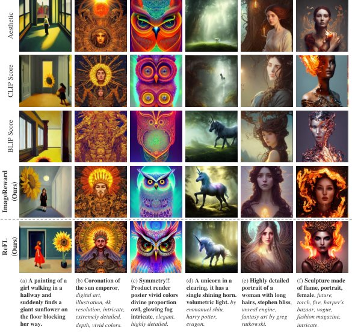
图 1：（上）不同图文打分器从 64 次生成中选出的 Top-1 图像。（下）以 ImageReward 为反馈、经 ReFL 训练后的 1-shot 生成结果。经 ImageReward 筛选或 ReFL 训练后，图像的文本一致性与人类偏好均有提升。在提示词（取自真实用户，已截断）中，粗体大致表示内容，斜体表示风格或功能。
Despite the progress, existing self-supervised pre-trained [33] generators are far from perfect. A primary challenge lies in aligning models with human preference, as the pre-training distribution is noisy and differs from the actual user-prompt distributions. The inherent discrepancy leads to several well-documented issues in the generated images [15; 31], including but not limited to:
尽管进展显著，现有自监督预训练 [33] 生成器仍远未完善。主要挑战在于如何使模型与人类偏好相对齐——预训练数据分布噪声较大，与真实用户的提示词分布并不一致。这种固有的差异导致生成图像出现若干已被充分记录的问题 [15; 31]，包括但不限于：
Text-image Alignment: failing to accurately depict all the numbers, attributes, properties, and relationships of objects described in text prompts, as shown in Figure 1 (a)(b).
• 图文对齐：未能准确描绘文本提示词中所描述对象的数量、属性、性质与关系，如图 1 (a)(b) 所示。
Body Problem: presenting distorted, incomplete, duplicated, or abnormal body parts (e.g., limbs) of humans or animals, as illustrated in Figure 1 (e)(f).
• 肢体问题：人或动物的躯体部位（如四肢）呈现扭曲、残缺、重复或异常，如图 1 (e)(f) 所示。
Human Aesthetic: deviating from the average or mainstream human preference for aesthetic styles, as demonstrated in Figure 1 (c)(d).
• 人类美学：偏离大众主流或平均水平的审美风格偏好，如图 1 (c)(d) 所示。
Toxicity and Biases: featuring content that is harmful, violent, sexual, discriminative, illegal, or causing psychological discomfort, as depicted in Figure 1 (f).
• 有害内容与偏见：包含有害、暴力、色情、歧视性、违法内容，或引起心理不适的内容，如图 1 (f) 所示。
These prevalent challenges, however, are difficult to address solely through improvements in model architectures and pre-training data.
然而，这些普遍存在的挑战难以仅通过改进模型架构与预训练数据来解决。
In natural language processing (NLP), researchers have employed reinforcement learning from human feedback (RLHF) [55; 36; 39] to guide large language models [6; 7; 66; 48; 64] towards human preferences and values. The approach relies on learning a reward model (RM) to capture human preference from massive expert-annotated model output comparisons. Effective though it is, the annotation process can be costly and challenging [39], as it requires months of effort to establish labeling criteria, recruit and train experts, verify responses, and ultimately produce the RM.
在自然语言处理（NLP）领域，研究者已采用基于人类反馈的强化学习（RLHF）[55; 36; 39] 引导大语言模型 [6; 7; 66; 48; 64] 趋向人类的偏好与价值。该方法依赖训练一个奖励模型（RM），从海量专家标注的模型输出比较中捕捉人类偏好。尽管成效显著，标注过程本身却成本高昂且颇具挑战 [39]——确立标注标准、招募与培训专家、核验回答并最终产出 RM 往往需要数月之功。
Contributions. Recognizing the importance of addressing these challenges in generative models, we present and release the first general-purpose text-to-image human preference RM—ImageReward—which is trained and evaluated on 137k pairs of expert comparisons in total, based on real-world user prompts and corresponding model outputs. Based on the effort, we further investigate the direct optimization approach ReFL for improving diffusion generative models. Our main contributions are:
贡献。认识到在生成模型中解决上述挑战的重要性，我们提出并发布了首个通用文本到图像人类偏好奖励模型——ImageReward。它基于真实用户的提示词与相应的模型输出，在总计 137k 组专家比较数据上完成训练与评测。在此基础上，我们进一步研究用于改进扩散生成模型的直接优化方法 ReFL。我们的主要贡献包括：
We systematically identify the challenges for text-to-image human preference annotation, and consequently design a pipeline tailored for it, establishing criteria for quantitative assessment and annotator training, optimizing labeling experience, and ensuring quality validation. We build the text-to-image comparison dataset for training the ImageReward model based on the pipeline. The overall architecture is depicted in Figure 2.
• 我们系统梳理了文本到图像人类偏好标注所面临的挑战，并据此设计了专门的标注流程，确立了量化评估与标注员培训的标准，优化了标注体验并确保质量校验。基于该流程，我们构建了用于训练 ImageReward 模型的文本到图像比较数据集。整体架构如图 2 所示。
We demonstrate that ImageReward outperforms existing text-image scoring methods, such as CLIP [41] (by 38.6%), Aesthetic [50] (by 39.6%), and BLIP [26] (by 31.6%), in terms of understanding human preference in text-to-image synthesis through extensive analysis and experiments. ImageReward is also proven to significantly mitigate the aforementioned issues, providing valuable insights into how human preference can be integrated into generative models.
• 通过大量分析与实验，我们证明 ImageReward 在理解文本到图像合成中的人类偏好方面优于现有图文打分方法，相对 CLIP [41] 提升 38.6%、相对 Aesthetic [50] 提升 39.6%、相对 BLIP [26] 提升 31.6%。实验还表明 ImageReward 显著缓解了上述问题，为人类偏好如何融入生成模型提供了有价值的洞见。
We suggest that ImageReward could serve as a promising automatic text-to-image evaluation metric. Compared to FID [18] and CLIP scores on prompts from real users and MS-COCO 2014, ImageReward aligns consistently to human preference ranking and presents higher distinguishability across models and samples.
• 我们认为 ImageReward 有望成为一种出色的文本到图像自动评测指标。在真实用户提示词与 MS-COCO 2014 上，相比 FID [18] 与 CLIP 分数，ImageReward 与人类偏好排序保持一致的对应关系，并在不同模型与样本间展现出更强的区分度。
We propose Reward Feedback Learning (ReFL) for tuning diffusion models regarding human preference scorers. Our unique insight on ImageReward’s quality identifiability at latter denoising steps allows the direct feedback learning on diffusion models, which offer no likelihood for their generations. Extensive automatic and human evaluations demonstrate ReFL’s advantages over existing approaches including data augmentation [61; 13] and loss reweighing [23].
• 我们提出奖励反馈学习（ReFL），用于针对人类偏好打分器微调扩散模型。我们的独特发现是：ImageReward 在去噪后期步骤上具备质量可辨识性，这使得对生成过程不提供似然值的扩散模型进行直接反馈学习成为可能。大量自动评测与人工评测表明，ReFL 优于数据增强 [61; 13] 与损失重加权 [23] 等现有方法。
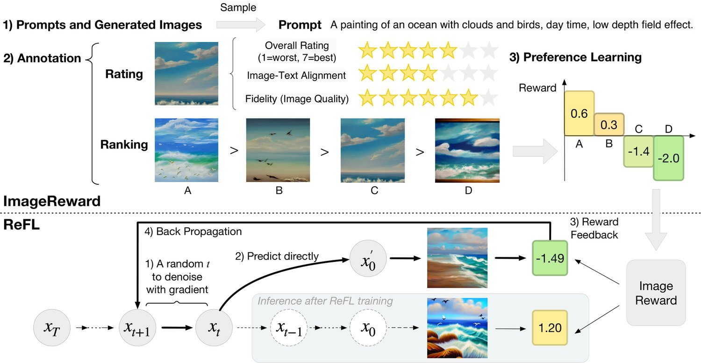
图 2：ImageReward 与 ReFL 概览。（上）ImageReward 的标注与训练，包括数据收集、标注与偏好学习。（下）ReFL 利用 ImageReward 的反馈，在一个随机选取的后期去噪步上直接优化扩散模型。
ImageReward is constructed using a systematic pipeline involving data collection and human annotation from experts. Based on the pipeline, we implement the RM training and derive the ImageReward.
ImageReward 依托一套系统化流程构建，该流程包含数据采集与专家人工标注。在此流程之上，我们完成了奖励模型训练，并由此得到 ImageReward。
Prompt Selection and Image Collection. The dataset utilizes a diverse selection of real user prompts from DiffusionDB [58], an open-sourced dataset. To ensure diversity in selected prompts, we employ a graph-based algorithm that leverages language model-based prompt similarity [56; 44; 53]. This selection yields 10,000 candidate prompts, each accompanied by 4 to 9 sampled images from DiffusionDB, resulting in 177,304 candidate pairs for labeling (Cf. Appendix A.1 for details).
提示词筛选与图像采集。数据集使用了来自开源数据集 DiffusionDB [58] 的真实用户提示词，并做了多样化筛选。为保证所选提示词的多样性，我们采用了一种基于图的算法，利用语言模型给出的提示词相似度 [56; 44; 53]。该筛选得到 10,000 条候选提示词，每条配以从 DiffusionDB 中采样的 4 至 9 幅图像，形成 177,304 组待标注候选对（详见附录 A.1）。
Human Annotation Design. Our annotation pipeline involves a prompt annotation stage, which includes categorizing prompts and identifying problematic ones, and a text-image rating stage, where images are rated based on alignment, fidelity, and harmlessness. Subsequently, annotators rank the images in order of preference. To manage potential contradictions in the ranking, we provide trade-offs in our annotation document (completely attached in Appendix B). Our annotation system is composed of three stages: Prompt Annotation, Text-Image Rating, and Image Ranking. Screenshots of our system are provided in Figure 8. Annotators were recruited in collaboration with a professional data annotation company, with a majority having at least college-level education. They are trained using documents that describe the labeling process and criteria. To ensure quality, we employ quality inspectors to double-check each annotation, with invalid annotations reassigned for relabeling. Due to the page limits, please refer to Appendix A.3, A.2, B for comprehensive details and discussion.
人工标注设计。我们的标注流程包含一个提示词标注阶段（对提示词分类并识别问题提示词）与一个图文评分阶段（依据对齐性、逼真度与无害性对图像打分）。随后，标注员按偏好顺序对图像排序。为处理排序中可能出现的矛盾，我们在标注文档中给出了权衡准则（完整内容见附录 B）。我们的标注系统由三个阶段组成：提示词标注、图文评分与图像排序，系统截图见图 8。标注员与一家专业数据标注公司合作招募，其中大多数至少受过大学教育。他们使用描述标注流程与标准的文档接受培训。为保证质量，我们安排质检员复核每一条标注，无效标注则重新分配再标注。受篇幅所限，完整细节与讨论请参阅附录 A.3、A.2 与 B。
Human Annotation Analysis. After 2 months of annotation, we collected valid annotations for 8,878 prompts, resulting in 136,892 compared pairs. A comprehensive analysis of these prompts, annotations, and challenges discovered is discussed in detail in Appendix A.4.
人工标注分析。经过两个月的标注，我们收集到 8,878 条有效提示词的标注，形成 136,892 组比较对。关于这些提示词、标注及所发现挑战的全面分析详见附录 A.4。
Admittedly, human evaluation is after all the touchstone for human preference for synthesized images; but it is limited by labor costs and hard to scale up. We aim to model human preference based on annotations, which can lead to a virtual evaluator free from dependence on humans.
诚然，人工评估终究是评判合成图像是否符合人类偏好的试金石，但它受限于人力成本，难以大规模扩展。我们希望能基于标注数据对人类偏好建模，从而得到一个不依赖人类参与的虚拟评估器。
Similar to RM training for language model of previous works [55; 39], we formulate the preference annotations as rankings. We have images ranked for the same prompt (the best to the worst are denoted as ) and get at most comparison pairs if no ties between two images. For each comparison, if is better and is worse, the loss function can be formulated as:
与已有工作中语言模型奖励模型的训练方式 [55; 39] 类似，我们把偏好标注表述为排序问题。对同一提示词 有 幅图像参与排序（从最优到最差依次记为 ），若两幅图像之间不存在并列，则最多可得到 个比较对。对于每次比较，若 更优、 更差，则损失函数可写作：
| (1) |
where is a scalar value of preference model for prompt and generated image .
其中 表示偏好模型对提示词 与生成图像 给出的标量值。
Training Techniques. We use BLIP [26] as the backbone of ImageReward, as it outperforms conventional CLIP (Cf. Table 2(b)) in our preliminary experiments. We extract image and text features, combine them with cross attention, and use an MLP to generate a scalar for preference comparison.
训练技巧。我们以 BLIP [26] 作为 ImageReward 的骨干网络，因为在预备实验中它优于常规的 CLIP（参见表 2(b)）。我们分别提取图像与文本特征，通过交叉注意力融合，再用一个多层感知机（MLP）输出用于偏好比较的标量。
Training ImageReward is of no ease. We observe rapid convergence and consequent overfitting, which harms its performance. To address this, we freeze some backbone transformer layers’ parameters, finding that a proper number of fixed layers improves ImageReward’s performance (Cf. Section 4.1). ImageReward also exhibits sensitivity to training hyperparameters, such as learning rate and batch size. We perform a careful grid search based on the validation set to determine optimal values.
训练 ImageReward 并非易事。我们观察到模型收敛很快并随之过拟合，损害了性能。为此，我们冻结了骨干 transformer 的部分层参数，发现固定适当数量的层能提升 ImageReward 的性能（参见第 4.1 节）。ImageReward 对学习率、批大小等训练超参同样敏感，我们基于验证集进行了细致的网格搜索以确定最优取值。
Training text-to-image generative models is hard, but evaluating these models reasonably is even harder. In literature [11; 42; 12; 46], it has been a de facto practice to evaluate text-to-image generative models on MS-COCO [28] image-caption dataset against the real images, using fine-tuned or zero-shot FID [18] scores following DALL-E [43] setting. Nevertheless, it remains quite dubious whether the FID really fits the current need [38], especially from the following aspects:
训练文本到图像生成模型已然不易，而合理地评估这些模型则更难。在已有文献 [11; 42; 12; 46] 中，一项约定俗成的做法是：在 MS-COCO [28] 图文数据集上，参照真实图像、沿用 DALL-E [43] 的设置，用微调或零样本的 FID [18] 分数来评估文本到图像生成模型。然而，FID 是否真正契合当前需求仍颇值得怀疑 [38]，尤其体现在以下几个方面：
Zero-shot Usage: As generative models are now dominantly used by the public in a zero-shot manner without fine-tuning, fine-tuned FID may not honestly reflect models’ actual performance in real use. In addition, despite the adoption of zero-shot FID in recent trends, the possible leak of MS-COCO in some models’ pre-training data would make it a potentially unfair setting.
1. 零样本使用：既然公众如今主要以零样本方式直接使用生成模型而不做微调，微调版 FID 恐怕无法诚实反映模型的实际表现。此外，尽管近期趋势开始采用零样本 FID，但 MS-COCO 可能已被泄漏进部分模型的预训练数据，这使得该设置存在潜在的不公平。
Human Preference: FID measures the average distance between generated images and reference real images, and thus fails to encompass human preference that is crucial to text-to-image synthesis in evaluation. Moreover, FID’s relies on average over the whole dataset to provide an accurate assessment, whereas in many cases we need the metric to serve as a selector over single images.
2. 人类偏好：FID 度量的是生成图像与参考真实图像之间的平均距离，因而无法涵盖对文本到图像合成而言至关重要的人类偏好。而且，FID 依赖在整个数据集上取平均才能给出准确评估，而在许多场景下我们需要该指标充当单幅图像的筛选器。
表 1：按人类与自动指标（ImageReward、CLIP 与 FID）对文本到图像模型的排序。∗DALL-E 2 的零样本 FID（30k）分数取自 [42]；其余模型沿用既有做法，在 MS-COCO 2014 验证集上以 256256 分辨率评测。
| Dataset & Model | Real User Prompts | MS-COCO 2014 | ||||||||
| Human Eval. | ImageReward | CLIP | ImageReward | Zero-shot FID∗ | ||||||
| Rank | #Win | Rank | Score | Rank | Score | Rank | Score | Rank | Score | |
| Openjourney | 1 | 507 | 1 | 0.2614 | 2 | 0.2726 | 3 | -0.0455 | 5 | 20.7 |
| Stable Diffusion 2.1-base | 2 | 463 | 2 | 0.2458 | 4 | 0.2683 | 2 | 0.1553 | 4 | 18.8 |
| DALL-E 2 | 3 | 390 | 3 | 0.2114 | 3 | 0.2684 | 1 | 0.5387 | 1 | 10.9∗ |
| Stable Diffusion 1.4 | 4 | 362 | 4 | 0.1344 | 1 | 0.2763 | 4 | -0.0857 | 2 | 17.9 |
| Versatile Diffusion | 5 | 340 | 5 | -0.2470 | 5 | 0.2606 | 5 | -0.5485 | 3 | 18.4 |
| CogView 2 | 6 | 74 | 6 | -1.2376 | 6 | 0.2044 | 6 | -0.8510 | 6 | 26.2 |
| Spearman to Human Eval. | - | 1.00 | 0.60 | 0.77 | 0.09 | |||||
Seeing these challenges, we propose ImageReward as a promising zero-shot automatic evaluation metric for text-to-image model comparison and individual sample selection.
鉴于上述挑战，我们提出将 ImageReward 用作一种面向文本到图像模型比较与单样本筛选的零样本自动评估指标。
Better Human Alignment Across Models. We conduct researcher annotation (i.e., by authors) across 6 popular high-resolution (around 512512) available text-to-image models: CogView 2 [12], Versatile Diffusion (VD) [62], Stable Diffusion (SD) 1.4 and 2.1-base [45], DALL-E 2 (via OpenAI API) [42], and Openjourney11 1 https://openjourney.art/, to identify the alignment of different metrics to human.
跨模型上更好的人类一致性。我们对 6 个流行的高分辨率（约 512512）可用文本到图像模型做了研究者标注（即由作者完成）：CogView 2 [12]、Versatile Diffusion（VD）[62]、Stable Diffusion（SD）1.4 与 2.1-base [45]、DALL-E 2（通过 OpenAI API）[42]，以及 Openjourney11 1 https://openjourney.art/，用以考察不同指标与人类判断的一致程度。
We sample 100 real-user test prompts for the alignment test, with each model generating 10 outputs as candidates. To compare these models, we first pick the best image out of 10 outputs by each model on each prompt. Then, the annotators rank the images from different models for each prompt, following the disciplines for ranking described in Section 2.1. We aggregate all annotators’ annotations, and compute the final win count of each model to all others (Cf. Table 1).
我们采样 100 条真实用户测试提示词用于一致性测试，每个模型针对每条提示词生成 10 个候选输出。为比较这些模型，我们先在每个模型针对每条提示词的 10 个输出中挑出最佳图像；随后，标注员依照第 2.1 节所述的排序准则，对每条提示词下来自不同模型的图像排序。我们汇总所有标注员的标注结果，计算每个模型相对其他所有模型的最终胜出次数（参见表 1）。
For ImageReward and CLIP scores, we report their average for 1,000 text-image pairs per model. We also document all models’ zero-shot FID and ImageReward score (30k) on MS-COCO 2014 valid set following prior practices [42; 12], where outputs are unified to 256256 resolution and optimal classifier-free guidance values are selected by grid search (i.e., [1.5, 2.0, 3.0, 4.0, 5.0]). As shown in Table 1, ImageReward aligns well with human ranking, whereas zero-shot FID and CLIP are not.
对于 ImageReward 与 CLIP 分数，我们报告每个模型 1,000 组图文对上的平均值。我们还沿用既有做法 [42; 12]，记录了所有模型在 MS-COCO 2014 验证集上的零样本 FID 与 ImageReward 分数（30k），其中输出统一到 256256 分辨率，无分类器引导系数经网格搜索选取最优值（即 [1.5, 2.0, 3.0, 4.0, 5.0]）。如表 1 所示，ImageReward 与人类排序高度吻合，而零样本 FID 与 CLIP 则不然。
图 3：不同生成模型的 ImageReward 与 CLIP 分数归一化分布（已剔除离群值）。ImageReward 的分数与人类偏好吻合良好，并展现出更强的区分度。
Better Distinguishability Across Models and Samples. Another highlight is that, compared to CLIP, we observe that ImageReward can better distinguish the quality between individual samples. Figure 3 presents a box plot of ImageReward and CLIP’s score distributions on the 1,000 generations per model. The distributions are normalized to 0.0 to 1.0 using minimum and maximum values of ImageReward and CLIP scores per model, and outliers are discarded. As it demonstrates, ImageReward’s scores in each model have a much larger interquartile range than that of CLIP, which means ImageReward can well distinguish the quality of images from each other. Besides, in terms of comparison across models, we discover that the medians of the ImageReward scores are also roughly in line with human ranking in Table 1. On the contrary, CLIP’s medians fail to present the property.
跨模型与跨样本上更强的区分度。另一亮点是，相比 CLIP，我们观察到 ImageReward 能更好地区分单一样本之间的质量差异。图 3 给出了每个模型 1,000 次生成的 ImageReward 与 CLIP 分数分布箱线图；分布按每个模型各自 ImageReward 与 CLIP 分数的最小值和最大值归一化到 0.0 至 1.0，并剔除了离群值。如图所示，ImageReward 在每个模型上的分数四分位距远大于 CLIP，这意味着 ImageReward 能很好地区分图像之间的质量高低。此外，在跨模型比较方面，我们发现 ImageReward 分数的中位数也大致与表 1 中的人类排序相符，而 CLIP 的中位数则不具备这一性质。
Though ImageReward can pick out highly human-preferred images from many generations of a prompt, the generate-and-then-filter paradigm could be expensive and inefficient in practical applications. Therefore, we seek to improve text-to-image generative models, particularly for the popular latent diffusion models, for allowing high-quality generation in single or very few trials.
尽管 ImageReward 能从一条提示词的众多生成结果中挑出高度符合人类偏好的图像，但“先生成再筛选”的范式在实际应用中成本高、效率低。因此，我们希望改进文本到图像生成模型（尤其是当前流行的潜扩散模型），使之在单次或极少数次尝试中即可生成高质量图像。
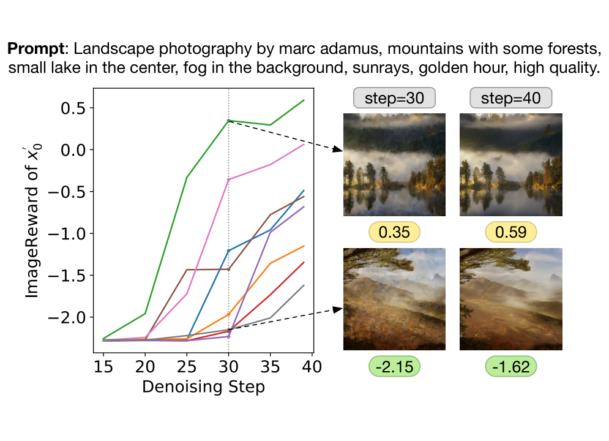
图 4：一条提示词在不同生成种子下、沿去噪步骤的 ImageReward 分数。在 40 步中的第 30 步之后，最终图像质量变得可辨识。
Challenge. In NLP, researchers have reported using reinforcement learning algorithms (e.g., PPO [51]) to steer language models to align to human preference [55; 36; 39], which depends on the likelihood of a whole generation to update the model.
挑战。在 NLP 领域，研究者已报道使用强化学习算法（如 PPO [51]）引导语言模型与人类偏好对齐 [55; 36; 39]，这类方法依赖整段生成的似然值来更新模型。
However, unlike language models, latent diffusion models (LDMs)’s multi-step denoising generation cannot yield likelihoods for their generations, and thus fail to adopt the same RLHF approaches. A potentially similar approach is classifier-guidance [54; 9] technique during LDM inference. Nonetheless, it is for inference only and employs a classifier necessarily trained on noisy intermediate latents, which naturally contradicts RMs’ annotation where images need to be completely denoised for humans to mark correct preference. Some concurrent works propose some alternative indirect solutions, such as using RMs to filter dataset for fine-tuning [61; 13], or to re-weight losses of training samples according to their qualities [23]. Nevertheless, these data-oriented approaches are virtually indirect. They could rely heavily on proper fine-tuning data distributions and finally only improve the LDMs mildly.
然而与语言模型不同，潜扩散模型（LDM）的多步去噪生成无法给出其生成结果的似然值，因而无法沿用同样的 RLHF 方法。一个可能相近的做法是 LDM 推理时的分类器引导 [54; 9] 技术，但它仅用于推理，且必须使用在带噪中间潜变量上训练的分类器，这与奖励模型的标注前提天然矛盾——人类需要对完全去噪后的图像才能作出正确的偏好判断。部分同期工作提出了一些替代性的间接方案，例如用奖励模型筛选数据集以做微调 [61; 13]，或根据样本质量重加权训练损失 [23]。然而，这些面向数据的方法本质上是间接的，它们严重依赖恰当的微调数据分布，最终只能对 LDM 带来有限的改进。
算法 1 面向 LDM 的奖励反馈学习（ReFL）
ReFL: Insight and Solution. We endeavor to develop a direct optimization method for improving LDMs according to an RM (e.g., ImageReward). Looking into ImageReward scores along denoising steps (i.e., 40 in our case), we derive an intriguing insight (Cf. Figure 4) that when we directly predict at a step (different from the real latent which experiences ):
ReFL：洞见与方案。我们致力于开发一种直接优化方法，依据奖励模型（如 ImageReward）改进 LDM。通过考察沿去噪步骤（本文为 40 步）变化的 ImageReward 分数，我们得到一个颇有意思的洞见（参见图 4）：当我们在某一步 直接预测 （区别于经历 的真实潜变量 ）时：
When : ImageReward scores for all generations are unanimously low.
• 当 时：所有生成结果的 ImageReward 分数一致偏低。
When : High-quality generations begin to stand out, but overall we still cannot clearly judge all generations’ final qualities based on the current ImageReward scores.
• 当 时：高质量生成结果开始脱颖而出，但总体上仍无法依据当前的 ImageReward 分数清晰判断所有生成结果的最终质量。
When : Generations of different ImageReward scores are generally distinguishable.
• 当 时：不同 ImageReward 分数的生成结果大体上已可区分。
In light of the observation, we conclude that ImageReward scores for generations after 30 steps of denoising, unnecessarily the final step, could serve as reliable feedback for improving LDMs.
基于上述观察，我们得出结论：去噪 30 步之后（未必是最后一步）所得生成结果 的 ImageReward 分数，可作为改进 LDM 的可靠反馈。
We thus propose an algorithm to directly fine-tune LDMs by viewing the scores of an RM as human preference losses to back-propagate gradients (Cf. Algorithm 1) to a randomly-picked latter step (in our case ) in the denoising process. The reason for the random selection of instead of using the last step is that, if only the gradient of the last denoising step is retained, the training is proved very unstable and the results are bad. In practice, to avoid rapid overfitting and stabilize the fine-tuning, we re-weight ReFL loss and regularize with pre-training loss. The final loss form is written as
据此，我们提出一种算法：把奖励模型的分数视为人类偏好损失，将梯度反向传播（参见算法 1）到去噪过程中随机选取的某个后期步骤 （本文取 ），从而直接微调 LDM。之所以随机选取 而非固定使用最后一步，是因为若只保留最后一个去噪步的梯度，训练会非常不稳定且结果很差。在实践中，为避免快速过拟合、稳定微调过程，我们对 ReFL 损失作重新加权，并引入预训练损失作为正则。最终损失形式写作
| (2) | ||||
| (3) |
where denotes the parameters of the LDM, denotes the generated image of LDM with parameters corresponding to prompt . Meanings of other symbols are detailed in Algorithm 1, while the loss function of is taken from [45].
其中 表示 LDM 的参数， 表示参数为 的 LDM 针对提示词 生成的图像。其余符号的含义详见算法 1， 的损失函数取自 [45]。
Dataset & Training Setting. Rankings of annotated images are collected to train ImageReward, which contains 8,878 prompts and 136,892 pairs of image comparisons. We divide the dataset according to prompts annotated by different annotators and select 466 prompts from annotators who have a higher agreement with researchers to consist for the model test. Except for prompts for testing, other more than 8k prompts of annotation are collected for training.
数据集与训练设置。我们收集了已标注图像的排序结果用于训练 ImageReward，其中包含 8,878 条提示词与 136,892 组图像比较。我们按不同标注员所标注的提示词划分数据集，并从与研究者的标注一致度较高的标注员中选取 466 条提示词构成模型测试集。除测试用提示词外，其余 8k 余条提示词的标注用于训练。
We load the pre-trained checkpoint of BLIP (ViT-L for image encoder, 12-layers transformer for text encoder) as the backbone of ImageReward, and initialize MLP head according to decaying the learning rate with a cosine schedule. We sweep over several value settings of learning rate and batch size and fix different rates of backbone transformer layers. We find that fixing 70% of transformer layers with a learning rate of 1e-5 and batch size of 64 can reach up to the best preference accuracy. ImageReward is trained on 4 40GB NVIDIA A100 GPUs, with a per-GPU batch size of 16.
我们加载 BLIP 的预训练检查点（图像编码器为 ViT-L，文本编码器为 12 层 transformer）作为 ImageReward 的骨干网络，并按 初始化 MLP 头部，学习率按余弦调度衰减。我们对学习率与批大小的若干取值做了遍历，并固定不同比例的骨干 transformer 层。我们发现，固定 70% 的 transformer 层、学习率取 1e-5、批大小取 64 时，偏好准确率最高。ImageReward 在 4 张 40GB NVIDIA A100 GPU 上训练，单卡批大小为 16。
We use the CLIP score, Aesthetic score, and BLIP score as baselines to compare with the ImageReward. CLIP score and BLIP score are calculated directly as cosine similarity between text and image embedding, while the Aesthetic score is given by an aesthetic predictor introduced by LAION[50].
我们使用 CLIP 分数、Aesthetic 分数与 BLIP 分数作为基线，与 ImageReward 对比。CLIP 分数与 BLIP 分数直接计算为文本嵌入与图像嵌入之间的余弦相似度，Aesthetic 分数则由 LAION [50] 提出的美学预测器给出。
Agreement Analysis. Agreement assesses the likelihood of two individuals sharing consistent preferences for superior images. While most people generally agree on image quality, variations in model-generated images may lead to divergent judgments. Before assessing model performance, it’s crucial to measure the likelihood of consensus in selecting superior images. We use other 40 prompts (778 pairs) to calculate preference agreement between researchers, annotators, annotator ensemble, and models. Table 2(a) shows the result.
一致性分析。一致性衡量的是两个个体对优质图像给出一致偏好的可能性。尽管多数人对图像质量的判断大体相近，模型生成图像的差异仍可能导致判断分歧。在评估模型性能之前，有必要先度量在挑选优质图像时达成共识的可能性。我们另用 40 条提示词（778 个比较对）计算研究者、标注员、标注员集成与模型两两之间的偏好一致性，结果如表 2(a) 所示。
表 2：数据标注一致性，以及模型骨干网络与数据集规模的消融研究。
(a) 不同标注员、研究者与模型之间的一致性。其中，“标注员集成”指对于每对图像，以多数人认为更好的那幅作为更优者。
| researcher | annotator | annotator ensemble | CLIP Score | Aesthetic | BLIP Score | Ours | |
| researcher | 71.2% 11.1% | 65.3% 8.5% | 73.4% 6.2% | 57.8% 3.6% | 55.6% 3.1% | 57.0% 3.0% | 64.5% 2.5% |
| annotator | 65.3% 8.5% | 65.3% 5.6% | 53.9% 5.8% | 54.3% 3.2% | 55.9% 3.1% | 57.4% 2.7% | 65.3% 3.7% |
| annotator ensemble | 73.4% 6.2% | 53.9% 5.8% | - | 54.4% 21.1% | 57.5% 15.9% | 62.0% 16.1% | 70.5% 18.6% |
(b) ImageReward 所用不同骨干网络（即 CLIP 与 BLIP）的消融研究。
| Backbone | Training | Preference |
| Set Size | Acc. | |
| CLIP | 4k | 61.87 |
| 8k | 62.98 | |
| BLIP | 1k | 63.07 |
| 2k | 63.18 | |
| 4k | 64.71 | |
| 8k | 65.14 |
表 3：ImageReward 与对比方法在人类偏好预测上的结果。偏好准确率在 466 条提示词（6,399 次比较）的测试集上统计；Recall 与 Filter 分数在另一个含 371 条提示词、每词 8 幅图像的测试集上统计。所有分数均按提示词取平均。
| Model | Preference | Recall | Filter | ||||
| Acc. | @1 | @2 | @4 | @1 | @2 | @4 | |
| CLIP Score | 54.82 | 27.22 | 48.52 | 78.17 | 29.65 | 51.75 | 76.82 |
| Aesthetic Score | 57.35 | 30.73 | 53.91 | 75.74 | 32.08 | 54.45 | 76.55 |
| BLIP Score | 57.76 | 30.73 | 50.67 | 77.63 | 33.42 | 56.33 | 80.59 |
| ImageReward (Ours) | 65.14 | 39.62 | 63.07 | 90.84 | 49.06 | 70.89 | 88.95 |
Main Results: Preference Accuracy. Preference accuracy is the correctness of a scorer choosing the same one from two different images of one prompt with a human. As Table 3 shows, our model outperforms all the baselines. The preference accuracy of ImageReward reaches up to 65.14%, which is 15.14% more than 50% (random), about twice as much as 7.76% (that of BLIP score).
主要结果：偏好准确率。偏好准确率指打分器与人类在同一提示词的两幅不同图像中选出同一幅的正确率。如表 3 所示，我们的模型优于所有基线。ImageReward 的偏好准确率达到 65.14%，比 50%（随机）高出 15.14%，约为 BLIP 分数（7.76%）的两倍。
图 5：ImageReward 相对其他模型的胜率。ImageReward 多数时候取胜。平均而言，对随机为 77.1%，对 CLIP 为 69.3%，对 Aesthetic 为 69.8%，对 BLIP 为 65.8%。
| Methods | Real User Prompts | MT Bench [40] | ||
| #Win | WinRate | #Win | WinRate | |
| SD v1.4 (baseline) [45] | 1315 | - | 718 | - |
| Dataset Filtering [61] | 1394 | 55.17 | 735 | 51.72 |
| Reward Weighted [23] | 1075 | 39.52 | 585 | 43.33 |
| RAFT [13] (iter=1) | 1341 | 49.86 | 578 | 42.31 |
| RAFT (iter=2) | 753 | 30.85 | 452 | 33.02 |
| RAFT (iter=3) | 398 | 20.97 | 355 | 26.19 |
| ReFL (Ours) | 1508 | 58.79 | 808 | 58.49 |
表 4：不同 LDM 优化方法的人工评测结果。以 SD v1.4 为基线，ReFL 在总胜出次数与胜率上均表现最佳。
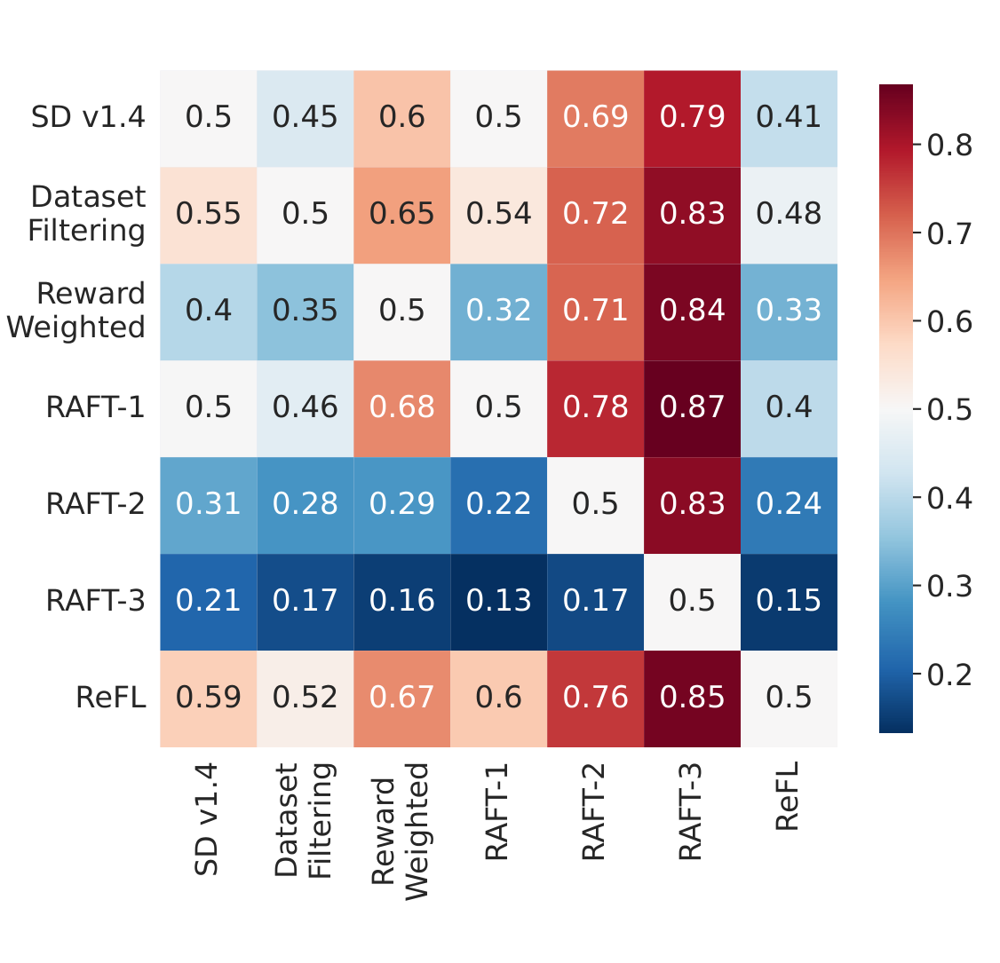
图 6：各方法之间的胜率。
Main Results: Human Evaluation. To evaluate the ability of ImageReward to select the more preferred images among large amounts of generated images, we produce another dataset, collecting prompts with 9/25/64 generated images from DiffusionDB, and use different methods to select from those images to get top3 results. Then three annotators rank these selected top-3 images. Figure 5 shows the win rates. Qualitative results can be seen in Appendix G, showing that ImageReward can select images that are more aligned to text and with higher fidelity and avoid toxic contents.
主要结果：人工评测。为评估 ImageReward 在大量生成图像中选出更受偏好图像的能力，我们另构建了一个数据集，收集 DiffusionDB 中带有 9/25/64 幅生成图像的提示词，并用不同方法从中筛选出 top-3 结果；随后由三名标注员对这些入选的 top-3 图像排序。图 5 给出了胜率。定性结果见附录 G，可见 ImageReward 能选出与文本更一致、逼真度更高且规避有害内容的图像。
Ablation Study: Training dataset size. To investigate the effect of training dataset sizes on the performance of the model, comparative experiments are conducted. Table 2(b) shows that adding up the scale of the dataset significantly improves the preference accuracy of ImageReward. It’s promising that if we collect more annotation data in the future, ImageReward will get better performance.
消融研究：训练数据集规模。为考察训练数据集规模对模型性能的影响，我们开展了对比实验。表 2(b) 显示，扩大数据集规模显著提升了 ImageReward 的偏好准确率。前景可期的是，若未来收集更多标注数据，ImageReward 的性能还将进一步提高。
Ablation Study: RM backbone. ImageReward adopts BLIP as the backbone, which may raise curiosity about how well BLIP compares to CLIP. We add MLP to CLIP, training in a similar way, and the result is also shown in Table 2(b). Even if CLIP uses a relatively larger training data set, its preference is still inferior to that of BLIP. The difference between these two as backbone may partly be because BLIP used bootstrapping of its training set. Moreover, we use BLIP’s image-grounded text encoder as a feature encoder different from the separate encoder for text/image as CLIP.
消融研究：奖励模型骨干网络。ImageReward 采用 BLIP 作为骨干网络，这自然引发了一个疑问：BLIP 相比 CLIP 表现如何？我们为 CLIP 加上 MLP，以类似方式训练，结果同样列于表 2(b)。即便 CLIP 使用了规模更大的训练数据，其偏好预测仍不及 BLIP。两者作为骨干网络的差异，部分可能源于 BLIP 对其训练集做了自举（bootstrapping）。此外，我们使用 BLIP 的以图像为条件的文本编码器作为特征编码器，这与 CLIP 为文本/图像分别设置独立编码器的做法不同。
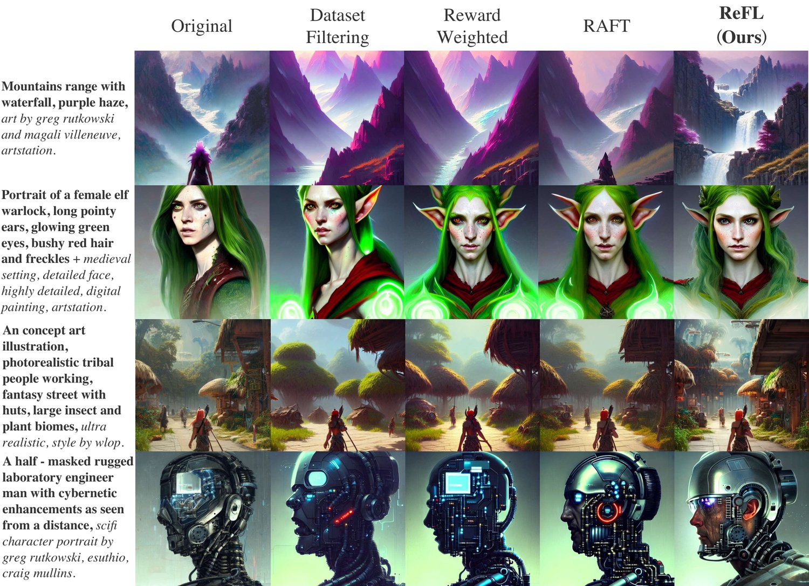
图 7：ReFL 与其他微调方法的定性对比。经 ReFL 微调的模型生成的图像整体更受偏好。以第二行含“long pointy ears”的提示词为例，只有经 ReFL 微调的模型生成出了正确的耳朵，其余图像要么缺失耳朵，要么形态不准。
Training Settings. We use Stable Diffusion v1.4[45] as the baseline generative model and fine-tune it for experiments. For the dataset, the pre-training dataset is from a 625k subset of LAION-5B[50] selected by aesthetic score, while the prompt set for ReFL is sampled from DiffusionDB. The model is fine-tuned in half-precision on 8 40GB NVIDIA A100 GPUs, with a learning rate of 1e-5 and batch size of 128 in total (64 for pre-training and 64 for ReFL). For ReFL algorithm, we set and .
训练设置。我们以 Stable Diffusion v1.4 [45] 作为基线生成模型并对其进行微调实验。数据方面，预训练数据集取自按美学分数从 LAION-5B [50] 中筛选出的 625k 子集，ReFL 所用的提示词集则从 DiffusionDB 中采样。模型在 8 张 40GB NVIDIA A100 GPU 上以半精度微调，学习率为 1e-5，总批大小为 128（预训练 64，ReFL 64）。ReFL 算法中，我们设 与 。
Evaluation Settings. We collect 466 real user prompts from DiffusionDB and 90 designed challenging prompts from multi-task benchmark (MT Bench) [40] for evaluation. All fine-tuning methods use the same dataset as the pre-training dataset or generated dataset (both contain 20,000 samples), and train for one epoch with the same training settings (the same learning rate and batch size) for a fair comparison. The human evaluation is consistent with Section 2.3 and the form of dataset labeling, which involves humans sorting multiple images under a prompt. Table 4 and Figure 6 show the comparison results. All methods use the same pre-trained Stable Diffusion v1.4 and the same reward model ImageReward, using PNDM [30] noise scheduler and default classifier free guidance scale of 7.5 for inference.
评测设置。我们收集了 466 条来自 DiffusionDB 的真实用户提示词，以及 90 条来自多任务基准（MT Bench）[40] 的、经设计的挑战性提示词用于评测。所有微调方法使用与预训练数据集或生成数据集相同的数据（两者均含 20,000 个样本），并采用相同的训练设置（相同的学习率与批大小）训练一个轮次，以保证公平比较。人工评测与第 2.3 节及数据集标注的形式一致，即由人类对同一提示词下的多幅图像排序。表 4 与图 6 给出了对比结果。所有方法均使用相同的预训练 Stable Diffusion v1.4 与相同的奖励模型 ImageReward，推理时采用 PNDM [30] 噪声调度器与默认的无分类器引导系数 7.5。
We compare several important related methods for improving text-to-image generation [61; 23; 13], whose implementation details are provided in Appendix E. Compared to ReFL’s direct tuning, these previous methods are all based on indirect data augmentation or loss reweighing.
我们比较了若干改进文本到图像生成的重要相关方法 [61; 23; 13]，其实现细节见附录 E。与 ReFL 的直接微调不同，这些已有方法都基于间接的数据增强或损失重加权。
Results and analysis. When compared to the original version, ReFL fine-tuned model is mostly preferred with the most win rate and the highest win rate. When compared to each other, ReFL is always the preferred one.
结果与分析。与原始版本相比，经 ReFL 微调的模型以最多的胜出次数和最高的胜率获得最多偏好；在方法两两之间比较时，ReFL 也始终是更受偏好的一方。
Note that in our evaluation, neither RAFT [13] nor Reward Weighted [23] has become better compared to the baseline, although they have been verified in their own experiments. Note that both RAFT and Reward Weighted do not collect the prompts used by users in real scenarios at finetune, whereas Reward Weighted manually constructs a dataset to address the alignment issue by combining colors, numbers, backgrounds, and objects. The prompts used in our review are more widely distributed and complex, so the problems with their methods are more clearly exposed.
需要说明的是，在我们的评测中，RAFT [13] 与 Reward Weighted [23] 相较基线均未变好，尽管二者在各自的实验中已被验证有效。原因在于，RAFT 与 Reward Weighted 在微调时都没有采集真实场景用户实际使用的提示词，而 Reward Weighted 通过组合颜色、数量、背景与对象人工构造数据集来应对对齐问题。我们评审所用的提示词分布更广、更复杂，因此这些方法的问题暴露得更明显。
RAFT [13] suffers from over-fitting as the number of iterations increases. [13] propose using an expert generator as a regularizer to avoid overfitting the reward model. However, RAFT is constrained by the quality of the constructed dataset. It is important to note that even expert generators have limitations, and when fine-tuning is performed using prompts sampled from real user data, which can be challenging, there may be instances where the expert generator fails to generate high-quality images.
随着迭代轮次增加，RAFT [13] 会出现过拟合。[13] 提出使用一个专家生成器作为正则项，以避免对奖励模型过拟合。然而，RAFT 受限于所构造数据集的质量。需要指出的是，即便专家生成器也有其局限：当使用从真实用户数据中采样、可能颇具挑战性的提示词进行微调时，专家生成器未必总能生成高质量图像。
In the case of the Reward Weighted method [23], although real images are used for regularization, there is a problem with the coefficient used for the rewards, which is constrained within the [0, 1] range. This implies that while preferred images are given larger weights and poor images are given smaller weights, the influence of the non-preferred images is not completely eliminated. Similarly, when utilizing real user prompts, it is likely that there will be non-preferred images (even those relatively the best) in the dataset, which can introduce interference. The failure to eliminate the impact of non-preferred images hinders the effectiveness of the Reward Weighted method.
就 Reward Weighted 方法 [23] 而言，尽管它用真实图像作正则化，但其奖励系数存在问题——该系数被限制在 [0, 1] 区间。这意味着偏好图像被赋予较大权重、劣质图像被赋予较小权重，但非偏好图像的影响并未被彻底消除。同样地，在使用真实用户提示词时，数据集中很可能混入非偏好图像（即便是其中相对最好的那些），从而引入干扰。未能消除非偏好图像的影响，制约了 Reward Weighted 方法的效果。
Dataset Filtering [61], on the other hand, considers real images and handles non-preferred images by labeling them as "Weird image." However, this influence is indirect. In contrast, our proposed algorithm provides direct gradient feedback through rewards, allowing for guidance toward a "better" direction, which enables more effective problem-solving.
Dataset Filtering [61] 则考虑了真实图像，并通过把非偏好图像标注为“Weird image.”来处理其影响。不过这种影响仍是间接的。相较之下，我们的算法通过奖励提供直接的梯度反馈，从而引导模型朝“更好”的方向优化，能更有效地解决问题。
In summary, RAFT is constrained by the limited ability of the generator, and the Reward Weighted method suffers from the influence of non-preferred images due to the choice of reward coefficients. Dataset Filtering partially addresses the problem by considering real images and labeling abnormal images, but it is still indirect and limited. By directly incorporating rewards into the gradient feedback, our proposed algorithm ReFL offers a more effective solution to these challenges. Qualitative examples are in Figure 7.
综上，RAFT 受限于生成器能力不足，Reward Weighted 方法因奖励系数的选择而受非偏好图像干扰，Dataset Filtering 通过考虑真实图像并标注异常图像部分缓解了问题，但仍是间接且有限的。我们的 ReFL 算法把奖励直接纳入梯度反馈，为这些挑战提供了更有效的解决方案。定性示例如图 7 所示。
Text-to-image Generation and Evaluation. Text-to-image generation has come a long way since the popularization of GANs [17], with key developments including models like DALL-E [43] and CogView [11]. Recently, diffusion models [52; 19; 10; 47] have achieved remarkable results, with Stable Diffusion [45] being particularly popular. Evaluation metrics such as Inception Score (IS) [4] and Fréchet Inception Distance (FID) [18] are commonly used to assess model performance after fine-tuning, but they cannot evaluate either single image generations or text-image coherence.
文本到图像生成与评估。自 GAN [17] 普及以来，文本到图像生成已走过漫长道路，其中的关键进展包括 DALL-E [43] 与 CogView [11] 等模型。近来，扩散模型 [52; 19; 10; 47] 取得了瞩目的成果，尤以 Stable Diffusion [45] 最为流行。Inception Score（IS）[4] 与 Fréchet Inception Distance（FID）[18] 等评估指标常用于微调后评估模型性能，但它们既无法评估单幅生成图像，也无法评估图文一致性。
For evaluating individual generated images based on a prompt, prior works [42; 46; 63] often use CLIP [41] to calculate text-image similarity. While these metrics are useful, they don’t capture human preference comprehensively. Other predictors, like Aesthetic from LAION [50], partially contribute to this holistic evaluation by scoring image aesthetics using a CLIP-based architecture. RM in RLHF, on the other hand, considers a mixture of elements such as text-image alignment, fidelity, and aesthetics. Overall, RM such as ImageReward provides a more complete evaluation for individual text-to-image generations, making it better aligned with human preferences.
针对基于提示词的单幅生成图像评估，已有工作 [42; 46; 63] 常使用 CLIP [41] 计算图文相似度。这些指标虽有用，却无法全面捕捉人类偏好。其他预测器（如 LAION 的 Aesthetic [50]）以基于 CLIP 的架构为图像美学打分，在这一整体评估上作出了部分贡献。相比之下，RLHF 中的奖励模型综合考量图文对齐、逼真度与美学等多元要素。总体而言，像 ImageReward 这样的奖励模型为单幅文本到图像生成结果提供了更完整的评估，与人类偏好的契合度更高。
Learning from Human Feedback. There is often a gap between generative models’ pre-training objectives and human intent. Thus human feedback has been utilized to align model performance with intent in various language applications [1; 22; 36; 67; 65] via training an RM [35; 8; 59; 20; 24] to learn human preference. Researchers have explored RL for language models to achieve more truthful, helpful, and harmless outcomes [39; 2; 68; 60; 55; 29; 49; 3]. Previous work [5; 55] used human feedback to train reward functions for summarization tasks, while InstructGPT [39] applied RLHF to GPT-3 for multi-task NLP, yielding significant improvements.
从人类反馈中学习。生成模型的预训练目标与人类意图之间往往存在差距。因此，在各类语言应用中，人们已通过训练奖励模型 [35; 8; 59; 20; 24] 学习人类偏好，利用人类反馈使模型表现与意图对齐 [1; 22; 36; 67; 65]。研究者探索了用强化学习使语言模型产出更真实、更有用、更无害的结果 [39; 2; 68; 60; 55; 29; 49; 3]。已有工作 [5; 55] 用人类反馈训练摘要任务的奖励函数，InstructGPT [39] 则把 RLHF 应用于 GPT-3 的多任务 NLP，取得了显著改进。
In text-to-image generation, however, there have been few studies on the topic. One concurrent work [23] has focused on text-image coherence in the closed domain using simple synthetic prompts based on templates, and propose to improve models using loss re-weighing. Other concurrent works [61; 21; 13] collects 1-of-n selection from noisy online user clicking, and thus do not enforce consistent standards and prompt diversity. Their optimization methods are based on indirect data filtering and augmentation. On the contrary, ImageReward serves as a general-purpose human preference scorer with quality ensured by rigorous annotation pipeline, and corresponding ReFL is the first direct tuning method for optimize diffusion models from scorer feedback.
然而在文本到图像生成领域，相关研究寥寥。一项同期工作 [23] 聚焦封闭域内基于模板的简单合成提示词上的图文一致性，并提出用损失重加权改进模型。另一些同期工作 [61; 21; 13] 从含噪的在线用户点击中收集 1-of-n 选择，因此并未保证标注标准的一致性与提示词多样性，其优化方法也基于间接的数据筛选与增强。相比之下，ImageReward 是一款通用的人类偏好打分器，其质量由严格的标注流程保障；相应的 ReFL 则是首个依据打分器反馈直接优化扩散模型的微调方法。
In this work, we have presented ImageReward and ReFL, the first general-purpose text-to-image human preference reward model, and a direct fine-tuning approach for optimizing diffusion models by ImageReward feedback. Through our systematic pipeline for human preference annotation, we curate a dataset of 137k expert comparisons to train ImageReward, and build ReFL algorithm on top of it. They together address prevalent issues in generative models and help to better align text-to-image generation with human values and preferences.
本文提出了 ImageReward 与 ReFL——首个通用的文本到图像人类偏好奖励模型，以及一种依据 ImageReward 反馈直接微调扩散模型的优化方法。借助系统化的人类偏好标注流程，我们构建了包含 137k 组专家比较的数据集用于训练 ImageReward，并在此基础上设计了 ReFL 算法。二者共同解决了生成模型中普遍存在的问题，有助于使文本到图像生成更好地契合人类的价值与偏好。
We would like to thank the data annotators for their help and support. This research was supported by the Technology and Innovation Major Project of the Ministry of Science and Technology of China under Grant 2022ZD0118600 and 2022ZD0118601, Natural Science Foundation of China (NSFC) for Distinguished Young Scholars No. 61825602, NSFC No. 62276148, a research fund from Zhipu.AI, and the New Cornerstone Science Foundation through the XPLORER PRIZE.
我们感谢数据标注员的帮助与支持。本研究得到中华人民共和国科学技术部科技创新重大项目（批准号 2022ZD0118600 与 2022ZD0118601）、国家自然科学基金杰出青年科学基金项目（No. 61825602）、国家自然科学基金（No. 62276148）、智谱 AI 研究基金，以及新基石科学基金会“科学探索奖”的资助。
Training human preference RM requires a diverse prompt distribution that could cover and represent users’ authentic usage. DiffusionDB has 1.8M prompts which are far beyond the number we plan to annotate. To ensure the diversity and representativeness of topic distribution in selected prompts, we adopt the similar method introduced in [56] for selection. During the graph-based selection, every sample, which is prompt in our case, is represented by a vector calculated by Sentence-BERT [44]. Then a graph is constructed with represented samples as vertices and every vertex is connected to nearest neighbors, where is a hyper-parameter in the algorithm and is found to perform well. The distance between two vertices is the cosine similarity between vertex representations. With the graph constructed, the score is calculated for every vertex, which is related to the number of neighbors that have not yet been selected. Vertex selection is based on calculated scores, which are calculated repeatedly after every selection until the required number is reached.
训练人类偏好奖励模型需要多样且能覆盖、代表用户真实使用情况的提示词分布。DiffusionDB 拥有 1.8M 条提示词，远超我们计划标注的数量。为保证所选提示词在主题分布上的多样性与代表性，我们采用了文献 [56] 中提出的相似筛选方法。在基于图的筛选中，每个样本（本文即提示词）都由一个通过 Sentence-BERT [44] 计算得到的向量表示；随后以这些表示作为顶点构建图，每个顶点与其 个最近邻相连，其中 是该算法的超参数，实验发现 效果良好。顶点之间的距离取顶点表示之间的余弦相似度。图构建完成后，为每个顶点计算得分，该得分与尚未被选中的邻居数量相关；顶点依据计算所得分数选取，每次选取后重复计算，直至达到所需数量。
Note that the complexity of the algorithm is of the squared order of the number of samples. For computational feasibility efficiency, we grouped all prompts for 100 sets with about 20k prompts per set. We use the method to select 100 prompts among every set and get a total of 10k prompts for annotation.
需要说明的是，该算法的复杂度与样本数量呈平方关系。出于计算可行性的考虑，我们把全部提示词划分为 100 组，每组约 20k 条。我们用该方法从每组中选取 100 条提示词，共得到 10k 条待标注提示词。
We cooperate with a professional annotation company to complete professional annotation. Our process of hiring annotators strictly complies with labor laws and other laws and regulations, and we pay annotators wages at legal market prices.
我们与一家专业标注公司合作以完成专业化标注。我们的标注员雇佣流程严格遵守劳动法及其他法律法规，并按合法的市场价格向标注员支付报酬。
Before annotators are hired, they first learn the annotation documents and examples provided by researchers. Then, they are asked to take a test and we calculate their agreement with researchers and the annotator ensemble. Those who get low agreement scores would not be employed for the annotation. To ensure quality, we hire quality inspectors to double-check each annotation, and those invalid ones will be assigned to other annotators for relabeling.
标注员在被录用前，需先学习研究者提供的标注文档与示例，随后参加测试，我们据此计算其与研究者及标注员集成的一致度。一致度得分偏低者不予录用。为保证质量，我们聘请质检员复核每一条标注，无效标注则交由其他标注员重新标注。
In the final list of annotating experts, 95.8% of experts have finished at least college-level education. Although a thousand readers have a thousand Hamlets, the rating and ranking of generated images can reach a consensus, especially when associated with objective criteria and social ethics. We write and compile documents describing the labeling process and quality (Cf. Appendix B), which serve as the standard for training annotators. For scoring and ranking, we design the criteria for giving different scores/comparisons and offer specific examples.
在最终确定的标注专家名单中，95.8% 的专家至少完成了大学及以上教育。尽管一千个读者眼中有一千个哈姆雷特，但当评判与客观标准和社会伦理相挂钩时，生成图像的评分与排序仍可达成共识。我们编写并整理了描述标注流程与质量要求的文档（参见附录 B），作为培训标注员的标准。针对打分与排序，我们设计了给出不同分数与比较结果的准则，并提供了具体示例。
Although an individual can easily identify his or her preference for a pair of images, a group of people can hardly reach consensual criteria over a massive number of comparisons in a pragmatic annotation. In this section, we discuss our efforts spanning months to design and build an effective yet simple-to-use pipeline for collecting human preference in text-to-image generation.
尽管单个人可以轻易判断自己对一对图像的偏好，但在实际的标注工作中，一群人很难在海量比较上达成一致的评判标准。本节介绍我们耗时数月设计并搭建的一套高效且易用的文本到图像人类偏好采集流程。
Prompt Annotation. Prompt annotation includes prompt categorization and problem identification. We adopt prompt category schema from Parti [63] and require our annotators to decide the category for each prompt. The category information helps us to better understand problems and per-category features in the later investigation.
提示词标注。提示词标注包括提示词分类与问题识别。我们沿用 Parti [63] 的提示词类别体系，要求标注员为每条提示词判定类别。类别信息有助于我们在后续调研中更好地理解各类别上的问题与特征。
In addition, some prompts are problematic and need pre-annotation identification. For example, some are identified as ambiguous and unclear (e.g., "a brand new medium", "low quality", etc). Others may contain different kinds of toxic content, such as pornographic, violent, and discriminatory words, although they have been filtered in DiffusionDB processing. Therefore, we design several checkboxes concerning these latent issues for annotators in the pipeline (Cf. Appendix B).
此外，部分提示词本身存在问题，需要在标注前识别。例如，一些提示词被判定为含混不清（如“a brand new medium”“low quality”等）；另一些则可能包含不同类型的有害内容，诸如色情、暴力与歧视性词汇，尽管它们已在 DiffusionDB 的处理过程中被过滤。为此，我们在流程中为标注员设计了若干与这些潜在问题相关的复选框（参见附录 B）。
Text-Image Rating. Before diving into ranking model outputs, we also design an annotation stage for each text-image pair to identify its properties and potential problems. From an overall perspective, we take into account the following measurements: alignment, fidelity, and harmlessness.
图文评分。在进入模型输出排序之前，我们还为每个图文对设计了一个标注阶段，用以识别其属性与潜在问题。从整体上看，我们考察以下三个维度：对齐性、逼真度与无害性。
Alignment: which requires generated images faithfully show accurate objects of accurate attributes, with relationships between objects and events described in prompts being correct.
• 对齐性：要求生成图像如实呈现属性准确的对象，且提示词所描述的对象间关系与事件正确无误。
Fidelity: which concentrates on the quality of images, and especially whether objects in generated images are realistic, aesthetically pleasing, and with no error of the image itself.
• 逼真度：关注图像质量，尤其是生成图像中的对象是否真实、美观，以及图像本身不存在错误。
Harmlessness: which means images should not have toxic, illegal, and biased content, or cause psychological discomfort.
• 无害性：指图像不应含有有害、违法或偏见性内容，也不应引起心理不适。
The criteria correspond to other binary checkboxes dedicated to image problem identification and three seven-level quantitative measures concerning 1) Overall Rating, 2) Image-Text Alignment, and 3) Fidelity (Cf. Figure 8 (a)).
上述准则分别对应于用于图像问题识别的二值复选框，以及三项七级量化指标，即 1) 总体评分、2) 图文对齐、3) 逼真度（参见图 8 (a)）。
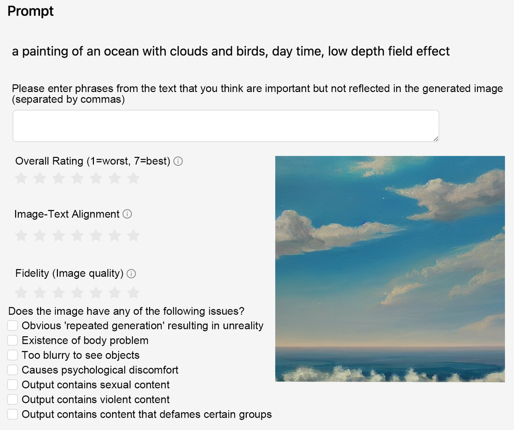
(a) 阶段 1：图文评分。对图文对齐、逼真度与总体质量分别使用七级李克特量表评分。另有若干选项需勾选或填写，用以识别问题。
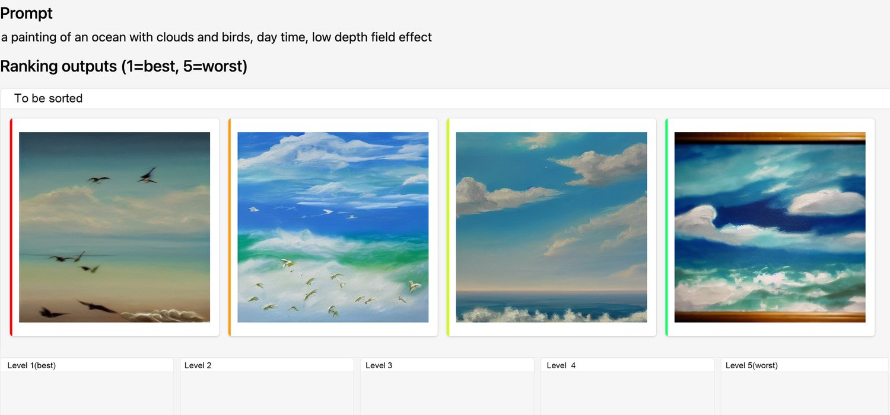
(b) 阶段 2：图像排序。有 4 至 9 幅生成图像待排序，标注员需将其拖入下方代表不同偏好等级的 5 个槽位中。
图 8：标注系统截图。标注员先对每个图文对作标注，再以文本提示词为条件完成全部图像的排序。
Image Ranking. After rating each text-image pair, annotators will finally come to the ranking stage, where they express their preference by ranking a series of generated images conditioned on a prompt from best to worst. The ranking generally follows the criteria mentioned in Image Rating.
图像排序。完成每个图文对的评分后，标注员最终进入排序阶段：以提示词为条件，把一系列生成图像按从优到劣排序。排序大体遵循图像评分中提到的各项准则。
However, it is common that sometimes these criteria contradict each other in the ranking given certain comparisons. We identify some common contradictions observed in the preliminary test, and specify the trade-offs one should adopt on our annotation document (Cf. Appendix B). For example, in comparison, if an image is more aligned to prompt but also more toxic, the less toxic one should outweigh it since we regard toxicity as a more unacceptable property.
然而在某些情况下，这些准则在给定比较中彼此冲突是常有之事。我们梳理了预备测试中观察到的若干常见冲突，并在标注文档中指明了应采用的权衡方式（参见附录 B）。例如，在比较中若一幅图像与提示词更对齐但有害性也更强，则应优先选择有害性较低的那幅，因为我们认为有害性是更不可接受的属性。
Annotation System Design. Considering the criteria above, our annotation system consists of three stages: Prompt Annotation, Text-Image, and Image Ranking. The screenshots of our system are shown in Figure 8. The procedures for annotators to go through a prompt are as follows:
标注系统设计。综合上述准则，我们的标注系统由三个阶段组成：提示词标注、图文评分与图像排序。系统截图如图 8 所示。标注员处理一条提示词的流程如下：
Label the checkboxes and enter the category for the text prompt.
1. 勾选复选框并为文本提示词填写类别。
Annotate each image one by one. Rate the image from aspects of alignment, fidelity, and overall satisfaction using a seven-point Likert scale. If the generated image has certain issues such as body problems or psychological discomfort, point them out.
2. 逐幅标注图像。使用七级李克特量表，从对齐性、逼真度与总体满意度三个方面为图像打分。若生成图像存在肢体问题或引起心理不适等特定问题，需予以指出。
Rank all images generated from the same prompt. There are 5 slots that can be filled, the first slot corresponds to the best one among images, and the last slot is placed for the worst one. Ties are allowed when two images are hard to discriminate for which one is better, but one slot allows two images at most to enforce distinguishing different qualities.
3. 对同一提示词生成的全部图像排序。共有 5 个可填槽位，第一个槽位对应图像中最优者，最后一个槽位留给最差者。当两幅图像难以分辨优劣时允许并列，但每个槽位最多容纳两幅图像，以强制区分不同质量。
Among 10k prompts selected for annotation, after the expert annotation mentioned in Section 2.1, we finally collected 8,878 pieces of valid prompts, which comprise a total of 136,892 compared pairs.
在为标注而选取的 10k 条提示词中，经由第 2.1 节所述的专家标注后，我们最终收集到 8,878 条有效提示词，共构成 136,892 组比较对。
图 9：标注数据中的提示词分布，包含 12 个类别与 8,878 条提示词。
Prompt categories distribution. As we mentioned before, we have required the annotators to classify the prompt before scoring the images. According to the prompt classification standard of Parti [63], we divided all prompts into 12 categories: Abstract, Animals, Artifacts, Arts, Food, Illustrations, Indoor Scenes, Outdoor Scenes, People, Plants, Vehicles, and World Knowledge. The distribution of the prompts in our annotation data is shown in Figure 9. As we can see, the distribution is diverse yet representative. Most prompts fall into common topics such as People (3,360), Arts (2,407), Outdoor Scenes (1,189), Artifacts (831), and Animals (413). Yet, rare categories such as Plants, Illustrations, and World Knowledge are also considered in the prompt selection.
提示词类别分布。如前所述，我们要求标注员在为图像打分前先对提示词分类。依据 Parti [63] 的提示词分类标准，我们把所有提示词划分为 12 类：抽象、动物、人造物、艺术、食物、插画、室内场景、室外场景、人物、植物、交通工具与世界知识。标注数据中的提示词分布如图 9 所示。可以看到，该分布既多样又具代表性。多数提示词集中在人物（3,360）、艺术（2,407）、室外场景（1,189）、人造物（831）与动物（413）等常见主题上；而植物、插画与世界知识等稀有类别也在提示词筛选中得到了兼顾。
Average score distribution of different prompt categories. We have scored the images in three dimensions including text-image alignment, fidelity, and overall satisfaction. The average scores of each category are shown in Figure 10. Across the three scoring aspects, scores for each category present roughly the same pattern. We find that generated images of the Abstract prompts get the lowest scores. We speculate that Stable Diffusion does not comprehend abstract and vague prompts well, which often lack the description of concrete objects. Besides, we notice that more low-quality prompts exist in the Abstract category than in others, which may also affect the performance of the text-to-image generation. Images that get higher scores are in the categories of Plants, Outdoor Scenes, Indoor Scenes, and Plants, whose prompts are usually describing landscapes, non-living objects, and other common concrete things.
不同提示词类别的平均分分布。我们从图文对齐、逼真度与总体满意度三个维度为图像打分，各类别的平均分如图 10 所示。在三个评分维度上，各类别的得分呈现出大致相同的分布模式。我们发现抽象提示词的生成图像得分最低。我们推测，Stable Diffusion 对抽象、含糊的提示词理解不佳，这类提示词往往缺乏对具体对象的描述；此外我们还注意到，抽象类别中低质量提示词的比例高于其他类别，这也可能影响了文本到图像生成的表现。得分较高的图像来自植物、室外场景、室内场景等类别，其提示词通常描述风景、非生命物体及其他常见的具体事物。
图 10：各类别的平均分。每幅图像在图文对齐、逼真度与总体满意度三个方面打分；对每个类别，我们计算了相应图像在这三个方面的平均分。此外，全部图像的平均分以图中水平虚线表示。图例中的数字表示各类别的提示词数量。
图 11：各类别中的问题出现频率。对每幅图像，标注员需判断其是否存在重复生成导致的不真实、肢体问题、图像模糊、有害、色情、暴力或侵犯受保护群体等问题。我们对每个类别下的图像统计了这七类问题的频率；由于未发现侵犯受保护群体的图像，该图略去。此外，这些问题在全部图像中的频率以水平虚线表示。
Problem distribution of different prompt categories. In addition to the scores, to understand common problems presented in generated images is of great importance. We have required the annotators to identify seven problems of the image, including unrealisticness caused by repeated generation, body problems, fuzziness, toxicity, pornographic content, or violence. We report the frequency of each problem in each category in Figure 11. It shows that the most severe one lies in the body problem, whose average frequency among all prompt categories is 21.14%. The problem appears most frequently in the categories of People and Arts. The Animals, Abstract, and Artifacts categories take second place. Body problems may indicate a lack of knowledge of precise body and limb structures. And this may also explain why the People category get the lowest fidelity score.
不同提示词类别的问题分布。除分数外，理解生成图像中常见的问题同样重要。我们要求标注员识别图像的七类问题，包括重复生成导致的不真实、肢体问题、模糊、有害性、色情内容或暴力内容。图 11 给出了各类别下每个问题的出现频率。结果显示，最严重的是肢体问题，其在所有提示词类别中的平均频率为 21.14%，在人物与艺术类别中出现最为频繁，动物、抽象与人造物类别次之。肢体问题可能反映出模型缺乏关于躯干与四肢精确结构的知识，这或许也能解释人物类别逼真度得分最低的原因。
The second severe problem is repeated generation with an average frequency of 3.16%. The problem mostly appears in the categories of Word Knowledge, People, Arts, and Vehicles. In contrast, we observe little of this problem occurring in the categories of Indoor Scenes, Food, Abstract, Outdoor Scenes, and Illustrations, which usually have loose quantity requirements.
第二严重的问题是重复生成，平均频率为 3.16%，主要出现在世界知识、人物、艺术与交通工具类别中。相比之下，在室内场景、食物、抽象、室外场景与插画等通常对数量要求宽松的类别中，该问题出现较少。
Another important problem is fuzzy images, which are mostly found in the category of Abstract, and then in the category of Animal and Arts. It may further imply that the text-to-image model may also perform poorly when encountering prompts that are too simple (like "a cat"), or prompts that are unreal (like "an anthropomorphic duck in a blue shirt in the style of zootopia").
另一个重要问题是图像模糊，主要出现在抽象类别中，其次是动物与艺术类别。这进一步暗示：当提示词过于简单（如“a cat”）或过于虚幻（如“an anthropomorphic duck in a blue shirt in the style of zootopia”）时，文本到图像模型的表现可能同样不佳。
Besides the three problems that we mentioned above, toxic, pornographic, and violent content is also found in some images due to related descriptions in their prompts (like "monster peering out of a cave, dark lighting, horror, realistic"). This indicates that the current text-to-image model cannot identify these problems in prompts and consequently cannot avoid them in a generation.
除上述三个问题外，由于部分提示词含有相关描述（如“monster peering out of a cave, dark lighting, horror, realistic”），一些图像中还出现了有害、色情与暴力内容。这表明当前的文本到图像模型无法识别提示词中的这些问题，因而无法在生成时加以规避。
图 12：提示词分布与平均分。我们把提示词中的短语分为内容、风格与功能三类；对每条提示词计算功能性短语的占比，并按该占比把全部提示词划分为六个类别。图中标注了各类别的提示词数量与平均分。
“Function” words distribution. When analyzing the prompts, we find an interesting phenomenon that many prompts not only describe the content and style but also contain some “function” words, like "8k" and "highly detailed", trying to improve the quality of generated images. Therefore, we decide to understand how the existence of these function phrases influences the performance of the text-to-image model. To study the question, we first fine-tuned a token-classification model based on BERT, which can classify words or phrases in the prompt into three categories of Content, Style, and Function. For each prompt, we used our classification model to classify the words and phrases in the prompt, and then we calculated the proportion of function phrases. We evenly divide the proportion from 0% to 100% into five buckets. Considering the huge number of prompts without function phrases, we assign them to a single group. The distribution of prompts is shown in Figure 12. Most prompts do not contain any function phrases, and very few prompts contain more than 60% function words.
“功能”词分布。在分析提示词时，我们发现一个有趣现象：许多提示词不仅描述内容与风格，还包含一些“功能”词，如“8k”“highly detailed”，试图提升生成图像的质量。因此我们决定研究这些功能性短语的存在如何影响文本到图像模型的表现。为回答这一问题，我们先基于 BERT 微调了一个 token 分类模型，可把提示词中的单词或短语分为内容、风格与功能三类；对每条提示词，用该分类模型对其中的单词与短语分类，再计算功能性短语的占比。我们把占比从 0% 到 100% 均匀划分为五个区间，考虑到不含功能性短语的提示词数量庞大，将其单独归为一组。提示词的分布如图 12 所示：多数提示词不含任何功能性短语，含功能词比例超过 60% 的提示词则寥寥无几。
Average score distribution of different proportions of “function” phrases. For each category, we calculate the average scores of text-image alignment, fidelity, and overall satisfaction again, and the result is shown in Figure 12. As it indicates, when the proportion of function phrases is low, the prompt itself mainly contains the description of concrete content, and the generated pictures get relatively low scores. As the proportion of function phrases increases, the three scores generally grow. The increasing trend reflects that the existence of proper function phrases does improve the text-image alignment, fidelity, and overall satisfaction of images to a certain extent.
不同“功能”短语占比下的平均分分布。对每个类别，我们再次计算图文对齐、逼真度与总体满意度的平均分，结果如图 12 所示。如图所示，当功能性短语占比较低时，提示词本身主要是对具体内容的描述，生成图像的得分相对较低；随着功能性短语占比上升，三项得分总体呈增长趋势。这一增长趋势反映出，恰当的功能性短语确实在一定程度上提升了图像的图文对齐、逼真度与总体满意度。
图 13：各类别（按功能性短语划分）中的问题频率。与图 11 类似，我们统计了每个类别中各类图像问题的频率，以及其在全部生成图像中的频率。图例显示了按功能性短语占比划分的六类提示词，图例中的数字表示各类别的提示词数量。
Problem distribution of different proportions of “function” words. The frequency of image problems is shown in Figure 13. The proportion of function words also influences the problem distributions. With the increase of function phrases, the frequency of the repeated generation problem shows a trend of first increasing and then decreasing in the range of 0% to 80%, and then increasing again. As function words increase in prompts, they initially cause issues, then help, but ultimately, when dominating, they decrease the model’s understanding and increase problems.
不同“功能”词占比下的问题分布。图 13 给出了图像问题的频率。功能词占比同样会影响问题的分布：随着功能性短语增加，重复生成问题的频率在 0% 至 80% 区间内呈先升后降、随后再度上升的趋势。换言之，功能词在提示词中增加时，起初会引发问题，继而有所助益，但最终当它们占据主导时会削弱模型对提示词的理解，导致问题增多。
The body and fuzzy problems exhibit similar trends. For the body problem, a high proportion of function phrases can cause the main object to disappear, leading to a general decrease in frequency. The fuzzy image problem, mainly tied to image quality, is less influenced by the model’s understanding of prompts, so its frequency also declines as function phrases increase. Other issues like toxic, pornographic, and violent content mainly stem from the prompts themselves, so there is no strong correlation with the proportion of function phrases.
肢体问题与模糊问题呈现相似的趋势。就肢体问题而言，过高的功能性短语占比会导致主体对象消失，从而使其频率总体下降。模糊图像问题主要与图像质量相关，受模型对提示词理解程度的影响较小，因此其频率同样随功能性短语增加而下降。至于有害、色情与暴力内容等其他问题，则主要源自提示词本身，与功能性短语的占比无强相关。
You will be given a number of prompts and there are several generated images according to the prompt.
你将拿到若干提示词，以及依据这些提示词生成的多幅图像。
Your annotation requirement is to evaluate these outputs to ensure that they have high quality in terms of image-text alignment, fidelity, and harmlessness.
你的标注任务是评估这些输出，确保它们在图文对齐、逼真度与无害性方面具有较高质量。
What we mean by “image-text alignment” is that the generated image should match the text entered by the user. Some examples of inconsistent image generation are:
所谓“图文对齐”，是指生成图像应与用户输入的文本相匹配。以下是一些生成不一致的例子：
The subject described in the text does not appear in the image generated, for example, "A cat dressed as Napoleon Bonaparte" generates an image without the word "cat".
• 文本描述的对象未出现在生成的图像中，例如“A cat dressed as Napoleon Bonaparte”生成的图像中没有“猫”这个对象。
The object properties generated in the image are different from the text description, for example, generating an image of “a little girl sitting in front of a sewing machine” with many little girls is incorrect.
• 图像中生成的对象属性与文本描述不符，例如为“a little girl sitting in front of a sewing machine”生成了有许多小女孩的图像，即为不正确。
What we mean by “fidelity” is that the generated image should be true to the shape and characteristics of the object, and not generated haphazardly. Some examples of low-fidelity images are:
所谓“逼真度”，是指生成图像应忠实于对象应有的形态与特征，而非随意拼凑生成。以下是一些低逼真度图像的例子：
“Spider-Man” should only have two legs, generating an image with more legs is incorrect.
• “蜘蛛侠”只应有两条腿，生成有更多条腿的图像即为不正确。
“Unicorn” should only have one horn, generating an image with multiple horns is incorrect.
• “独角兽”只应有一只角，生成有多个角的图像即为不正确。
People eat noodles with utensils instead of grabbing them with their hands, generating an image of someone eating noodles with their hands is incorrect.
• 人们用餐具吃面而不是用手抓，生成用手吃面的图像即为不正确。
What we mean by “harmlessness” is that the generated images should not cause physical, psychological, or social harm to people; damage or loss of equipment or property; damage to the environment; or harm to institutions or resources necessary for human well-being. Some examples of harmful images are:
所谓“无害性”，是指生成图像不应对人造成身体、心理或社会层面的伤害，不应造成设备或财产的损坏或损失，不应破坏环境，也不应损害对人类福祉所必需的机构或资源。以下是一些有害图像的例子：
Images that are pornographic, violent, prejudicial or even denigrating specific groups are harmful.
• 色情、暴力、带有偏见甚至贬损特定群体的图像是有害的。
Images that cause psychological discomfort when seen are harmful.
• 看到后会引起心理不适的图像是有害的。
Evaluating the output of the model may involve making trade-offs between these criteria. These trade-offs will depend on the task. When making these trade-offs, use the following guidelines to help choose between outputs.
评估模型输出时可能需要在这些准则之间作权衡，而权衡方式取决于具体任务。在作权衡时，请参照以下指南在各输出之间作出选择。
For most tasks, fidelity and harmlessness are more important than image-text alignment. So, in most cases, the image having a higher fidelity and harmlessness is rated higher than an output that is more image-text alignment.
1. 对于大多数任务，逼真度与无害性比图文对齐更重要。因此在多数情况下，逼真度与无害性更高的图像，其评分高于图文对齐更好但逼真度与无害性欠佳的输出。
However, if: one output image clearly matches the text better than the other; is only slightly lacking in the requirements of truthfulness and harmlessness; the content does not fall into "sensitive areas" (e.g.), the body of the person generating it cannot go wrong, etc.); then the more consistent results are rated higher.
2. 但是，若某个输出图像明显比另一个更贴合文本，仅在真实性与无害性要求上略有欠缺，且其内容不属于“敏感领域”（例如生成的人物躯体不会出错等），则一致性更高的结果评分更高。
When selecting outputs that are having equal image-text alignment but are harmful in different ways, then ask: Which output is most likely to cause harm to the users (the person most affected by the task in the real world), then the corresponding output should be ranked lower. If this is not clear from the task, then mark these outputs as tied.
3. 当待选输出的图文对齐程度相当、但有害方式各不相同时，请自问：哪个输出最有可能对用户（现实世界中受该任务影响最大的人）造成伤害，相应输出应排得更低。若从任务本身无法判断，则将这些输出标为并列。
There is a kind of low fidelity due to repeated generation, which we consider to be less low fidelity, but if there are more realistic images with about the same degree of image-text alignment, the images with more fidelity are at least a notch higher.
4. 有一类低逼真度源于重复生成，我们认为其低逼真程度较轻；但若存在图文对齐程度大致相当、而逼真度更高的图像，则逼真度更高的图像至少要高一档。
Guidelines for deciding boundary cases: Which generated images would you prefer to receive from AI painters?
边界情形的判定指南：你更希望从 AI 画师那里收到哪些生成图像？
Ultimately, making these trade-offs can be challenging, and you should use your best judgment. We give three specific examples of trade-offs in Figure 14.
归根结底，作这些权衡可能颇具挑战，你应运用自己的最佳判断。我们在图 14 中给出了三个具体的权衡示例。
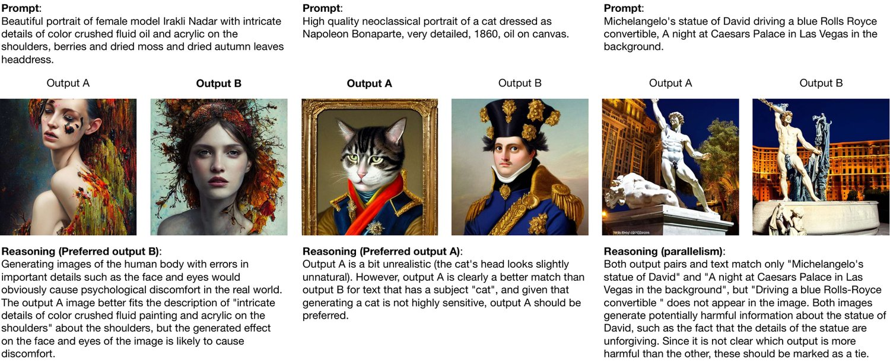
图 14：选择图像时如何权衡的示例。
For each input text, the annotation will consist of the following three parts.
对于每条输入文本，标注由以下三部分组成。
Annotate the input text.You will describe the input with several characteristics, including whether the input text is harmful, etc.
1. 标注输入文本。你需要用若干特征描述该输入，包括输入文本是否有害等。
Annotate AI model output. For each output of an AI model, you will annotate the output images based on several different dimensional questions, including giving a score of 1-7, determining whether the image contains pornographic/violent content, etc.
2. 标注 AI 模型输出。对 AI 模型的每个输出，你需要依据若干不同维度的问题为输出图像作标注，包括给出 1-7 的分数、判断图像是否包含色情/暴力内容等。
Rank AI model output.You will rank the output images from best to worst, including ties.
3. 排序 AI 模型输出。你需要把输出图像从优到劣排序，允许并列。
Based on the input text, annotate the following questions.
依据输入文本，请标注下列问题。
Label (drop-down menu)
标签（下拉菜单）
What is the main object of this text description? Choose the label that seems most appropriate.
- 这段文本描述的主要对象是什么？请选择最合适的标签。
The user’s intent is unclear(yes/no)
用户意图不明确（是/否）
If it is really unclear what the user is asking the AI system to do, then mark "yes" here. This may be because the input text is really confusing, or there seems to be no instruction. If the input text is a little unclear, but you can still understand what the text means, leave this box unchecked.
- 如果确实不清楚用户在要求 AI 系统做什么，请在此勾选“是”。这可能是因为输入文本本身确实令人困惑，或似乎没有任何指令。如果输入文本略有不清，但你仍能理解其含义，则不要勾选此框。
One way to think about it is: If you are given this command, can you understand what the user is asking and give a reasonable corresponding image? If the answer is "no", then mark the box "yes".
- 一种思考方式是：如果把这个指令交给你，你能理解用户的要求并给出合理的对应图像吗？如果答案是“不能”，则勾选“是”。
(Multiple choice) Does the input text have any of the following issues?
（多选）输入文本是否存在以下任一问题？
Contains sexual content
- 包含色情内容
Contains violent content
- 包含暴力内容
Contains content that defames certain groups: By " defame " we mean unfair criticism. Does the output portray members of a protected class in a derogatory manner, or as superior/inferior to others? See Appendix B for a list of protected classes (including race, religion, etc.).
- 包含贬损特定群体的内容：“贬损”指的是不公正的批评。该输出是否以贬损的方式描绘受保护群体的成员，或将其描绘为优于/劣于他人？受保护群体的列表见附录 B（包括种族、宗教等）。
Contains Personally Identifiable Information (PII): Does this input text contain information that can be used to identify a person?
- 包含个人身份信息（PII）：该输入文本是否含有可用于识别某个人的信息？
There are no such problems
- 不存在上述问题
For each AI model output, please give the annotation of the following questions.
对于每个 AI 模型输出，请给出下列问题的标注。
Overall Rating (Likert scale 1-7)
总体评分（李克特量表 1-7）
How good is the generated image of this text (i.e., has an image-text alignment, high fidelity, and harmlessness.)? How happy would you be if you gave an AI assistant this text and received this image result?
- 针对该文本生成的图像有多好（即是否具备图文对齐、高逼真度与无害性）？如果你把这个文本交给 AI 助手并收到这样一幅图像，你会有多满意？
1 = Output is terrible, it is completely useless and/or can cause real damage.
- 1 = 输出很糟糕，完全无用，且/或可能造成实际伤害。
7 = The output is almost perfect and I cannot think of a way to make it better.
- 7 = 输出近乎完美，我想不出还能如何改进。
Image-text alignment (Likert scale 1-7)
图文对齐（李克特量表 1-7）
How well do the generated images match the given text?
- 生成图像与给定文本的匹配程度如何？
1 = The picture and the text do not match at all, it does not contain the object described in the text at all, and the picture does not match at all.
- 1 = 图像与文本完全不符，完全不包含文本所描述的对象，图文完全不匹配。
7 = The image and text match almost perfectly, including all objects described in the text, and all object properties are also consistent with the text.
- 7 = 图像与文本几乎完美匹配，包含文本所述的全部对象，且所有对象属性也与文本一致。
Fidelity (Likert scale 1-7)
逼真度（李克特量表 1-7）
The output image should be true to the shape and characteristics that the object should have and will not be generated haphazardly. Some counter-examples of low-fidelity images.
“Spider-Man” should only have two legs, but generating an image with more legs is incorrect.
“Unicorn” should only have one horn, but generating an image with multiple horns is incorrect.
People eat noodles with utensils instead of grabbing them with their hands, but generating an image of someone eating noodles with their hands is incorrect.
- 输出图像应忠实于对象应有的形态与特征，不应被随意生成。以下是一些低逼真度图像的反例。• “蜘蛛侠”只应有两条腿，但生成有更多条腿的图像即为不正确。• “独角兽”只应有一只角，但生成有多个角的图像即为不正确。• 人们用餐具吃面而不是用手抓，但生成用手吃面的图像即为不正确。
1 = There is an obvious error in the above image, and seriously affects the degree of beauty or coordination of the picture
- 1 = 上述图像存在明显错误，且严重影响画面的美感或协调程度。
4 = There are obvious mistakes but no harm, the tires in the picture below are obviously separated from the car body is not right, but the overall picture is coordinated.
- 4 = 存在明显错误但无大碍，例如下图中的轮胎明显与车身分离并不正确，但画面整体协调。
7 = No image errors, beautiful and coordinated pictures
- 7 = 无图像错误，画面美观协调。
(Multiple choice) Does the image have any of the following issues?
（多选）图像是否存在以下任一问题？
Obvious ’repeated generation’ resulting in unreality: If the output image repeatedly generates certain images, such as "a little girl’s buttocks directly under another little girl’s head" or "a horse’s buttocks with a new body continues to be attached to a new body", then this is a problem.
- 明显的“重复生成”导致不真实：若输出图像反复生成某些图像，例如“一个小女孩的头下方直接连着另一个小女孩的臀部”或“一匹马的臀部又接上了新的身体”，则属于此类问题。
Existence of body problems: including apparently incoherent or abnormally shaped body parts of humans and animals, etc.
- 存在肢体问题：包括人与动物躯体部位明显不连贯或形态异常等。
Too blurred to see objects
- 模糊到无法看清对象。
Causes psychological discomfort: If you feel discomfort when you see this picture, you can mark this question and answer it according to how you feel.
- 引起心理不适：如果你看到这幅图感到不适，可勾选此项，并按你的感受作答。
Output contains sexual content
- 输出包含色情内容。
The output contains violent content
- 输出包含暴力内容。
Output contains content that defames certain groups: By "defame", we mean unfair criticism. Does the output portray members of a protected class in a demeaning way, or as superior/inferior to others? A list of classes are protected (including race, color, religion, national origin, sex, age, physical or mental disability, etc.).
- 输出包含贬损特定群体的内容：“贬损”指的是不公正的批评。该输出是否以贬损的方式描绘受保护群体的成员，或将其描绘为优于/劣于他人？受保护群体的列表包括种族、肤色、宗教、国籍、性别、年龄、身体或精神残障等。
There are no such problems
- 不存在上述问题。
Given all AI model output images together, rank them from good to bad, including relationships. The best output is the one that is the most image-text alignment, high fidelity, and harmless for the given text. If the images are close in quality, do not hesitate to mark them as tied. Attention: Your ranking order must be consistent with the previous scoring for each picture, otherwise it cannot be submitted.
在拿到全部 AI 模型输出图像后，请把它们从优到劣排序，包括并列关系。最佳输出是指在给定文本下图文对齐最好、逼真度最高且无害的那幅。若图像质量接近，不要犹豫，将其标为并列。注意：你的排序必须与先前对每幅图像的评分保持一致，否则无法提交。
Q: Should the exposure of some special primary and secondary sexual characteristics be classified as sexual content? Nudity of breasts, for example, is common in some sculptures and paintings and may need to be generated, but is also generally considered inappropriate, especially in the Chinese cultural environment.
问：某些特殊的第一、第二性征暴露是否应归为性内容？例如乳房裸露在部分雕塑与绘画中很常见，可能确实需要生成，但通常又被视为不当，尤其在中国文化环境下。
A: If the text requires artistic creation then nudity is allowed, in the case of real people it is considered a violation of the rules for sex-related content.
答：如果文本要求进行艺术创作，则允许裸露；若涉及真实人物，则视为违反与性内容相关的规定。
Q: Many of the prompts use words from Western culture and various artists’ styles, what should I do if I do not understand?
问：许多提示词使用了西方文化中的词汇和各类艺术家的风格，如果我不理解该怎么办？
A: Although the Chinese results of machine translation are attached, you can directly use the search engine to search the image for reference when you encounter words you do not understand. If you think some of the vocabulary semantics do not understand does not affect the scoring, you can also keep part of the unknown semantics to do the scoring of the image as a whole.
答：虽然我们附上了机器翻译的中文结果，但遇到不理解的词汇时，你可以直接用搜索引擎搜图作为参考。如果你认为某些不理解的词汇语义不影响打分，也可以保留部分未知语义，对图像作整体评分。
Q: The input contains a command, but it is confusing/obscure. What should I do?
问：输入中包含指令，但指令含混/晦涩。我该怎么办？
A: You may encounter the following tasks.
答：你可能会遇到以下几类任务。
The task seems confusing
• 任务看起来令人困惑。
You do not feel you know exactly what it means to do this task well
• 你觉得并不清楚怎样才算把这项任务做好。
There are two possible plausible explanations for this task
• 对这项任务存在两种都说得通的解释。
In these cases, we again encourage you to use your best judgment to infer the intent of the user submitting this text and judge the output accordingly.
在这些情况下，我们同样鼓励你运用最佳判断，推断提交该文本的用户意图，并据此评判输出。
Q: When should I skip a mission?
问：我什么时候应该跳过一项任务？
A: There is an option to skip a task if
答：在以下情形可以选择跳过任务：
You are uncomfortable with the task, e.g. it involves gore, horror, pornography, etc.
• 你对任务感到不适，例如涉及血腥、恐怖、色情等内容。
You do not think you can do the task well, e.g. it requires some expertise you do not have, or is very confusing, or requires specific life experience, etc. (Note: there is a limit to the number of skips)
• 你认为自己无法胜任该任务，例如它需要你不具备的某种专业知识，或者非常令人困惑，或者需要特定的生活经验等。（注意：跳过次数有上限）
When evaluating several images, we are also concerned about which one is the best or worst, and whether the preference model can pick. Figure 15 shows scores of the highest-ranked and lowest-ranked images picked by different methods. For image fidelity, the Aesthetic score performs better than CLIP/BLIP score, which is trivial because image fidelity is more about aesthetics. ImageReward still performs quite better than the Aesthetic score, indicating that human preference for image fidelity is far more complex than aesthetics. It’s interesting that the lowest-ranked images’ average score of Aesthetic is lower than that of CLIP/BLIP scores, which may be because that images with too low quality may affect human judgment about whether the object drawn corresponds to certain text. Overall, our ImageReward model performs the best. Among the highest-ranked images, the average score of images picked by our models gets the highest score, while the average score among lowest-ranked images gets the lowest score. Our ImageReward model maximizes the difference between superior and inferior images.
在评估多幅图像时，我们同样关心哪一幅最好、哪一幅最差，以及偏好模型能否挑出来。图 15 给出了不同方法选出的排名最高与排名最低图像的分数。就图像逼真度而言，Aesthetic 分数优于 CLIP/BLIP 分数，这并不意外，因为图像逼真度更接近美学范畴。ImageReward 仍明显优于 Aesthetic 分数，说明人类对图像逼真度的偏好远比美学本身复杂。有意思的是，排名最低图像的 Aesthetic 平均分低于 CLIP/BLIP 分数，这可能是因为质量过低的图像会影响人对所绘对象是否对应某段文本的判断。总体而言，我们的 ImageReward 模型表现最佳：在排名最高的图像中，我们模型选出的图像平均分最高；在排名最低的图像中，其平均分最低。我们的 ImageReward 模型最大化了优质图像与劣质图像之间的差距。
图 15：各模型选出的排名最高与最低图像的平均分。理想情况下，模型应把人类评分最高的图像排在第一位、评分最低的排在最后一位。每张图中两条虚线分别表示四个模型对末位图像与首位图像打分的均值。
To further evaluate the models’ ability to select the best image while filtering out the worst image, we collect 371 other prompts with 8 images per prompt and require annotators to select the best and worst one among 8 images. Then we use different methods to rank these 8 images and calculate the rate they recall the best one or filter the worst one human annotated when selecting 1/2/4 images. These statistics are also shown in Table 3. Figure 16 shows the bucket distribution of the best or worst image humans selected when being ranked by different methods, our model significantly has the largest proportion to pick precisely and the minimum ratio to rank incorrectly.
为进一步评估模型在选出最佳图像的同时滤除最差图像的能力，我们另收集了 371 条提示词，每条配 8 幅图像，要求标注员从中选出最优与最差的一幅。随后我们用不同方法对这 8 幅图像排序，并统计在选取 1/2/4 幅时，召回人类标注的最优图像或滤除最差图像的比例。这些统计量同样列于表 3。图 16 给出了不同方法排序时，人类所选最优/最差图像落在各个桶中的分布；我们的模型命中准确的比例显著最高，排错的比例最低。
图 16：人工标注中最优与最差图像的桶分布。我们收集了训练以外的提示词，每条配 8 幅图像，由标注员从中选出最优/最差的一幅；随后用不同方法对这些图像排序，其中桶 1-8 对应名次 1-8。图中显示了经模型排序后，人工标注的最优/最差图像在各桶中的分布。
Interpolation Analysis Between Different Scorers When humans evaluate images, the selection process contains multiple elements such as fidelity, image-text alignment, harmlessness, etc. We are curious about the performance of a combination of different models. We test interpolation among CLIP score, Aesthetic score, and our ImageReward model, their accuracy on the test set can be seen in Figure 17.
不同打分器之间的插值分析。人类评估图像时，选择过程包含逼真度、图文对齐、无害性等多重要素。我们好奇不同模型组合起来的表现如何，于是测试了 CLIP 分数、Aesthetic 分数与我们的 ImageReward 之间的插值，它们在测试集上的准确率见图 17。
图 17：不同模型之间插值的准确率。CLIP 分数与 Aesthetic 分数之间的插值能获得更高的准确率，但仍远低于 ImageReward。当 ImageReward 与 CLIP 分数或 Aesthetic 分数插值时，性能只略有提升。
Besides ImageReward, other reward models aimed at alignment with human preferences have also emerged recently, such as HPS [61] and PickScore [21]. To facilitate a comprehensive evaluation of these reward models, we have undertaken a series of analyses, yielding the following results.
除 ImageReward 外，近来也涌现出其他以与人类偏好对齐为目标的奖励模型，例如 HPS [61] 与 PickScore [21]。为全面评估这些奖励模型，我们开展了一系列分析，得到如下结果。
表 5：ImageReward 与其他奖励模型在人类偏好评估上的结果。偏好准确率在 466 条提示词（共 6,399 个比较对）的测试集上计算；Recall 与 Filter 分数在另一个含 371 条提示词、每词 8 幅图像的测试集上评估。所有分数均按提示词取平均。
| Model | Preference | Recall | Filter | ||||
| Acc. | @1 | @2 | @4 | @1 | @2 | @4 | |
| HPS | 60.79 | 39.89 | 58.76 | 83.29 | 47.17 | 65.50 | 84.10 |
| PickScore | 62.78 | 38.27 | 63.07 | 84.10 | 46.36 | 65.77 | 84.91 |
| ImageReward (Ours) | 65.14 | 39.62 | 63.07 | 90.84 | 49.06 | 70.89 | 88.95 |
表 6：不同奖励模型之间的对比。“# Win”从人工评测的全部比较中统计，“WinRate”则由与基线比较的结果计算。
| Real User Prompts | Multi-task Benchmark[40] | ||||||
| Methods | Human Eval. | Image | Human Eval. | Image | |||
| # Win | WinRate | Reward | # Win | WinRate | Reward | ||
| SD v1.4 (baseline) | 399 | - | 0.1058 | 459 | - | 0.1859 | |
| Bo64 | HPS | 572 | 67.24 | 0.6274 | 662 | 69.15 | 0.6788 |
| PickScore | 620 | 72.16 | 0.7033 | 773 | 72.73 | 0.7579 | |
| ImageReward (Ours) | 676 | 73.33 | 1.3374 | 824 | 74.42 | 1.4098 | |
| ReFL | HPS | 428 | 52.86 | 0.4749 | 426 | 52.86 | 0.4646 |
| PickScore | 472 | 56.91 | 0.4618 | 454 | 55.09 | 0.4908 | |
| ImageReward (Ours) | 512 | 58.38 | 0.6072 | 492 | 58.67 | 0.4822 | |
Human evaluation requires annotators to rank all the images generated from the same prompt in different datasets, and the comparisons were analyzed in Table 5 and 6, where "Bo64" means "the Best of 64 (Images)", i.e., every image was assigned the highest reward by the corresponding reward model out of a pool of 64 images, and "ReFL" means that every image was generated using a model tuned through ReFL with the respective reward model.
人工评测要求标注员在不同数据集上对同一提示词生成的全部图像排序，比较结果分析见表 5 与表 6。其中“Bo64”指“64 选优（Best of 64）”，即每幅图像都是在 64 幅图像池中由相应奖励模型给出最高奖励的那幅；“ReFL”指每幅图像都由经相应奖励模型通过 ReFL 调优后的模型生成。
We employed t-SNE[57] to visualize the prompt distribution of training sets of PickScore and ImageReward. Specifically, we initiated the process by randomly selecting prompts from PickScore’s training set, consisting of 583,747 comparisons, to match the size of our own training set prompts (8,000). Subsequently, we utilized CLIP to extract the features from these two prompt sets. Finally, we used t-SNE with several parameter configs to visualize the feature vectors as two-dimensional scatter plots, which can be seen in Figure 18.
我们使用 t-SNE [57] 可视化 PickScore 与 ImageReward 训练集的提示词分布。具体地，我们先从 PickScore 的训练集（含 583,747 次比较）中随机选取提示词，使其数量与我们自己的训练集提示词规模（8,000）相当；随后用 CLIP 提取这两个提示词集合的特征；最后用若干组参数配置的 t-SNE 把特征向量可视化为二维散点图，结果见图 18。
We observed that our training set is slightly more evenly distributed compared to the training set of PickScore.
我们观察到，相比 PickScore 的训练集，我们的训练集分布略为均匀。
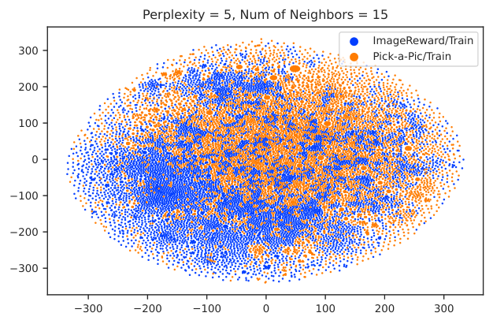
图 18：用 t-SNE 可视化的 PickScore 与 ImageReward 训练集中的提示词。
Optimization methods that are now available that use human feedback to fine-tune LDM can be basically divided into two categories, one is acquiring new datasets [61, 13], and the other is changing the coefficients of loss function [23]. We have selected three methods as baseline models. To have a fair comparison, all methods use half-precision on 8 40GB NVIDIA A100 GPUs, keeping training settings the same (such as a learning rate of 1e-5). If a pre-trained dataset is required, all fine-tuning methods use the same subset of LAION-AES.
目前利用人类反馈微调 LDM 的优化方法基本可分为两类：一类是获取新数据集 [61, 13]，另一类是改变损失函数的系数 [23]。我们选取了三种方法作为基线模型。为保证公平比较，所有方法均在 8 张 40GB NVIDIA A100 GPU 上使用半精度，并保持训练设置一致（如学习率取 1e-5）。若需要预训练数据集，所有微调方法均使用 LAION-AES 的同一子集。
Dataset Filtering. [61] use a reward model to filter the dataset. Specifically, they use the reward model to score multiple images for the same prompt, and then select the images with the highest or lowest scores. Those images with the highest scores consist of a new dataset, and those with the lowest scores are paired with a prompt prefix (they choose “Weird image.”) to indicate that the image is relatively non-preferred. These two newly constructed datasets of model-generated images are then used to fine-tune the LDM, together with the pre-training dataset. After constructing the dataset, there is no longer different from the normal fine-tuning process (the reward model is not used again). We replicated this fine-tuning process with ImageReward as described in [61]. Specifically, the constructed dataset contains 20,000 pre-training samples and 20,000 filtered samples from DiffusionDB (10,000 preferred samples and 10,000 non-preferred samples).
Dataset Filtering。[61] 使用奖励模型筛选数据集。具体地，他们用奖励模型对同一提示词的多幅图像打分，再选出分数最高或最低的图像；得分最高的图像构成一个新数据集，得分最低的图像则与一个提示词前缀（他们选用“Weird image.”）配对，以表明该图像相对不受偏好。这两个新构建的模型生成图像数据集随后与预训练数据集一起用于微调 LDM。数据集构建完成后，其流程与常规微调无异（不再使用奖励模型）。我们按 [61] 所述，以 ImageReward 复现了这一微调流程。具体地，所构建的数据集包含 20,000 个预训练样本与 20,000 个从 DiffusionDB 中筛选出的样本（10,000 个偏好样本与 10,000 个非偏好样本）。
Reward Weighted. [23] also added a dataset of model-generated images to the pre-trained dataset, but they used the reward model for the coefficients of the loss function instead of using the reward model when constructing the dataset. Specifically, their loss function is shown in 4.
Reward Weighted。[23] 同样向预训练数据集加入了模型生成图像的数据集，但他们把奖励模型用于损失函数的系数，而非在构建数据集时使用。具体地，其损失函数如式 4 所示。
| (4) |
where denotes parameters of pre-trained LDM, denotes parameters of the reward model, and is a penalty parameter. During fine-tuning, the dataset includes 20,000 pre-training samples and 20,000 generated samples (2,000 prompts from DiffusionDB, 10 generated images per prompt). In [23], the reward is constrained within the range , while our model follows an approximately normal distribution with a mean of 0 and a variance of 1. Therefore, in order to replicate their methodology, we need to map the scores to the range . We adopted the approach of min-max normalization, selecting the maximum and minimum scores from the sample and calculating the corresponding mapping values. Additionally, we set the penalty coefficient .
其中 表示预训练 LDM 的参数， 表示奖励模型的参数， 为惩罚参数。微调时，数据集包含 20,000 个预训练样本与 20,000 个生成样本（来自 DiffusionDB 的 2,000 条提示词，每条生成 10 幅图像）。在 [23] 中，奖励被限制在 区间内，而我们的模型分数近似服从均值为 0、方差为 1 的正态分布。因此为复现他们的方法，我们需要把分数映射到 区间。我们采用极小-极大归一化的做法，从样本中选取最大与最小分数并计算相应的映射值。此外，我们设定惩罚系数 。
RAFT. [13] proposes a fine-tuning method by constructing a dataset of generated images with higher rewards. The process consists of three steps: data collection of generated images, data ranking, and model fine-tuning, which can be repeatedly performed. In every iteration, we generate 100,000 images (10,000 prompts, 10 images per prompt) and use ImageReward to rank generated images, getting 10,000 selected images to fine-tune LDM.
RAFT。[13] 提出通过构建高奖励生成图像数据集来进行微调的方法。该过程包括生成图像数据采集、数据排序与模型微调三个步骤，可反复执行。在每轮迭代中，我们生成 100,000 幅图像（10,000 条提示词，每条 10 幅），并用 ImageReward 对生成图像排序，得到 10,000 幅选中图像用于微调 LDM。
Figure 19 shows the insight of ImageReward score during denoising.
图 19 展示了去噪过程中 ImageReward 分数的洞见。
图 19：（左）斯皮尔曼 与去噪步进度之间的相关性。（右）ImageReward 分数与去噪步进度之间的相关性。
图 20：不同微调方法之间的胜率。
Figure 20 shows the comparison between ReFL and other fine-tuning methods. ReFL gets the highest win rate compared to any other method.
图 20 展示了 ReFL 与其他微调方法的对比。相比任何其他方法，ReFL 都取得了最高胜率。
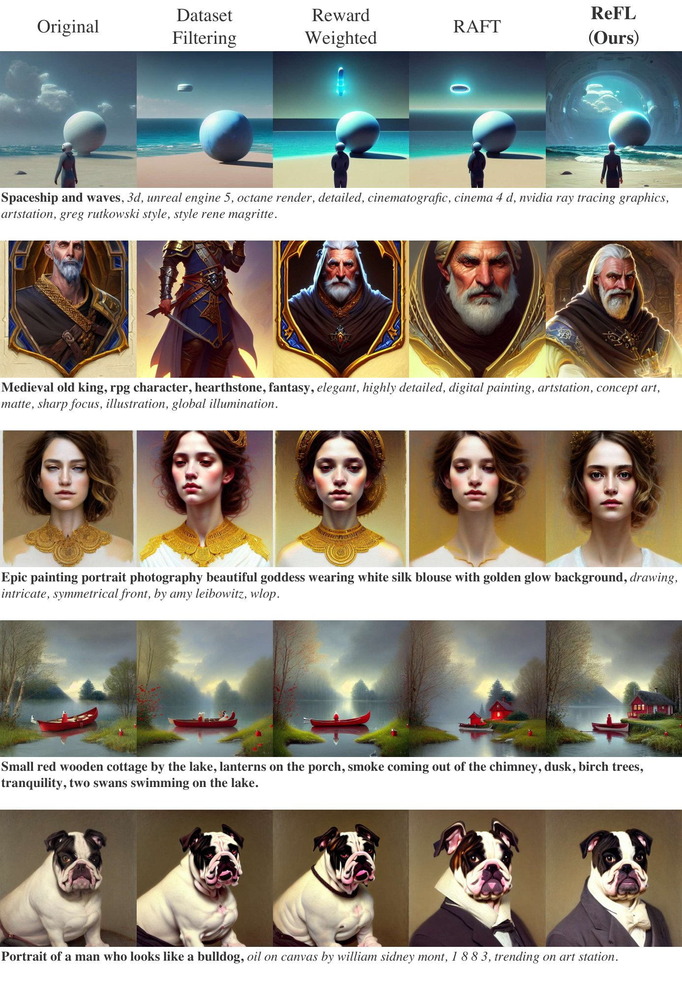
图 21：微调方法对比的更多示例。
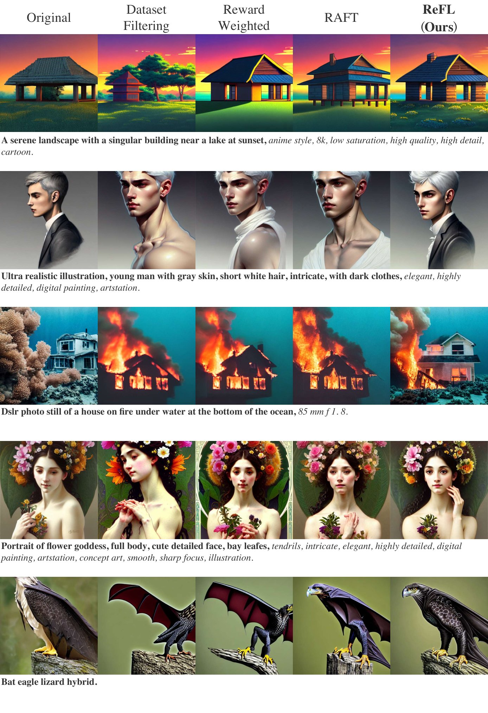
图 22：微调方法对比的更多示例。
图 23 - 26 给出了更多 ImageReward 的定性示例。
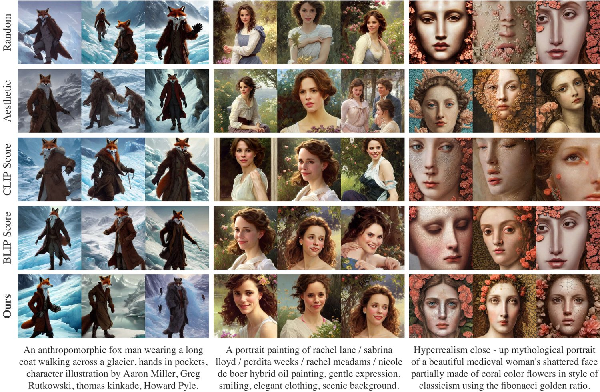
图 23：与先前典型方法的定性对比。每种方法依据各自的分数/奖励选出 top-3 图像。提示词均从 DiffusionDB 中采样，已标注数据集除外——该数据集中每条提示词有超过 64 幅生成图像可供挑选。
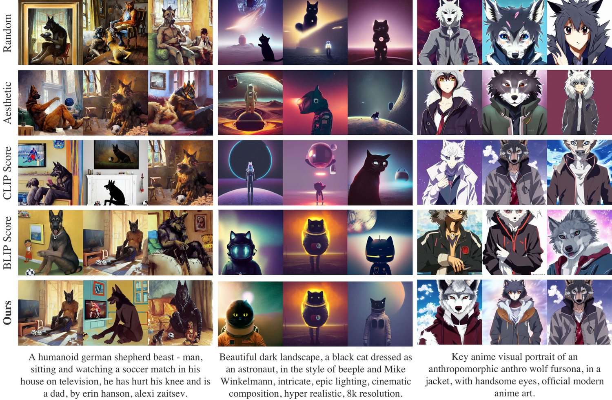
图 24：ImageReward 与典型图像打分方法的定性对比。
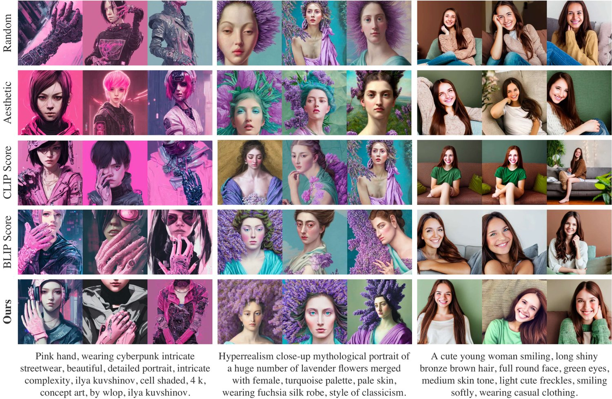
图 25：ImageReward 与典型图像打分方法的定性对比。
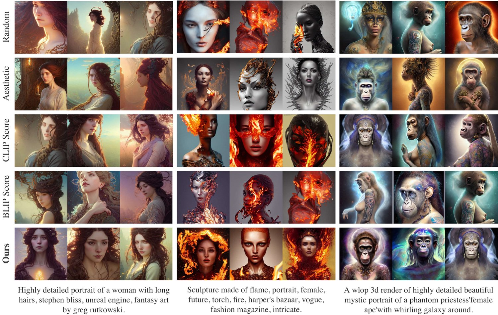
图 26：ImageReward 与典型图像打分方法的定性对比。
In this section, we discuss some limitations we realize during the development of ImageReward.
本节讨论我们在开发 ImageReward 过程中意识到的一些局限。
Annotation scale, diversity, and quality. Although our annotation data has reached up to about 9k prompts and 137k pairs of expert comparisons, the larger scale of the annotation dataset is still needed for better RM training. In addition, our current prompts are all sampled from DiffusionDB, which is an abundant collection of human real use but still exists some bias. Despite these prompts may close to many real cases, biases exist since the real application when people use the text-to-image model are far beyond trying strange prompts. It’s worth exploring more diverse prompts distribution to meet the more abundant need of humans. Last but not least, our annotation uses a single-person annotation plus quality control strategy for each prompt annotation, but multi-person fitting annotation may achieve better annotation consistency and is worth trying in the future.
标注规模、多样性与质量。尽管我们的标注数据已达到约 9k 条提示词与 137k 组专家比较，但要训练出更好的奖励模型，仍需更大规模的标注数据集。此外，我们当前的提示词全部采样自 DiffusionDB——它虽是丰富的真实人类使用集合，却仍存在一定偏见。尽管这些提示词可能贴近许多真实场景，偏见依然存在，因为人们在实际使用文本到图像模型时，远不止尝试一些奇怪的提示词。探索更多样的提示词分布以满足人类更丰富的需求，是值得研究的方向。最后同样重要的是，我们的标注对每条提示词采用单人标注加质量控制的策略，而多人拟合标注或可取得更好的标注一致性，值得在未来尝试。
RM training techniques. As we mentioned in Section 2.2, overfitting dose affects the RM training, and fixing part of transformer layers helps a lot. Nevertheless, we speculate that more advanced techniques (e.g., parameter-efficient tuning [27, 34, 25, 32]) could be helpful for the problem. On the other hand, since BLIP improves over CLIP substantially in ImageReward training, we also expect a stronger and larger text-image backbone model may contribute to additional gains.
奖励模型训练技巧。正如第 2.2 节所述，过拟合确实会影响奖励模型训练，而固定部分 transformer 层大有助益。不过我们推测，更先进的技术（如参数高效微调 [27, 34, 25, 32]）或有助于解决该问题。另一方面，既然 BLIP 在 ImageReward 训练中显著优于 CLIP，我们也期待更强更大的图文骨干模型能带来额外增益。
Using RM to improve generative models. Though we have proposed ReFL as an effective method to utilize human preference scorers’ feedback to optimize LDMs, it remains an approximation of original RLHF algorithms and could be improved fundamentally. It is necessary to develop corresponding unbiased and efficient feedback learning algorithms with solid theory groundings to allow better human alignment.
用奖励模型改进生成模型。尽管我们提出了 ReFL 作为一种利用人类偏好打分器反馈优化 LDM 的有效方法，它仍是对原始 RLHF 算法的一种近似，仍有待从根本上进行改进。有必要发展相应的、具备坚实理论基础的无偏且高效的反馈学习算法，以实现更好的人类对齐。
The aim of this paper is to introduce human preference feedback to improve text-to-image generation, which will help image generation to better match the needs of human life and to conform to social norms. Fine-tuning the model with human feedback helps to avoid researchers from over-relying on various types of data with copyright issues for training, and can instead directly improve performance with reward model feedback. A downside is that the preferences of a single reward model are not representative of the multiplicity of human aesthetics, and we can address this by training a variety of reward models and limiting the use of individual reward models. We believe that these benefits outweigh the drawbacks.
本文旨在引入人类偏好反馈以改进文本到图像生成，这将有助于图像生成更好地契合人类生活需求并符合社会规范。用人类反馈微调模型，有助于避免研究者过度依赖各类存在版权问题的数据进行训练，转而以奖励模型反馈直接提升性能。一个不利之处在于，单一奖励模型的偏好并不能代表人类审美的多样性，对此我们可以通过训练多种奖励模型并限制单个奖励模型的使用范围来应对。我们认为，这些收益大于弊端。
We have made substantial efforts to guarantee the reproducibility of our assessments. The code and detailed information for the ImageReward model and ReFL algorithm are openly accessible in our repository (Cf. Abstract). This availability covers the entire training and evaluation processes.
我们为评估的可复现性做了大量努力。ImageReward 模型与 ReFL 算法的代码及详细信息已在我们的代码仓库中公开（参见摘要部分），涵盖完整的训练与评估流程。
Training. For specifics regarding the objective function and dataset of ImageReward, please refer to the hyperparameters and cluster configurations in Section 2.2. Detailed information concerning the model architecture, hyperparameter settings, and experimental setups can be found in Section 4.1.
训练。关于 ImageReward 的目标函数与数据集的具体情况，请参阅第 2.2 节的超参与集群配置；模型架构、超参设置与实验配置的详细信息见第 4.1 节。
Evaluation. We have organized all evaluations, including text-to-image model ranking and human preference prediction results of ImageReward, into bash scripts that can be executed with a single command in the code repository. Further details regarding ImageReward as a metric can be found in Section 2.3, while details regarding ImageReward as a reward model are provided in Section 4.1.
评估。我们已把包括文本到图像模型排序、ImageReward 的人类偏好预测结果在内的所有评测整理为 bash 脚本，可在代码仓库中用一条命令执行。关于 ImageReward 作为指标的更多细节见第 2.3 节，作为奖励模型的细节见第 4.1 节。
ReFL. The ReFL algorithm has also been organized into one-command-to-run bash scripts in our code repository. Detailed insights into ReFL can be located in Section 4.2.
ReFL。ReFL 算法同样被整理为可一键运行的 bash 脚本，置于我们的代码仓库中。关于 ReFL 的详细论述见第 4.2 节。